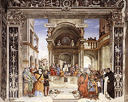
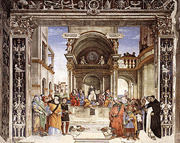

|  |
|---|
Textum Leoninum emendatum ex plagulis de prelo Taurini 1961 editum
et automato translatum a Roberto Busa SJ in taenias magneticas
denuo recognovit Enrique Alarcón atque instruxit


|  |
|---|


[28046] Contra Gentiles, lib. 4 cap. 79 n. 1 Quia vero supra ostensum est quod per Christum liberati sumus ab his quae per peccatum primi hominis incurrimus; peccante autem primo homine, non solum in nos peccatum derivatum est, sed etiam mors, quae est poena peccati, secundum illud apostoli, ad Rom. 5-12: per unum hominem peccatum in hunc mundum intravit, et per peccatum mors: necessarium est quod per Christum ab utroque liberemur, et a culpa scilicet et a morte. Unde ibidem dicit apostolus: si in unius delicto mors regnavit per unum, multo magis accipientes abundantiam donationis et iustitiae, in vitam regnabunt per unum Iesum Christum.
[28047] Contra Gentiles, lib. 4 cap. 79 n. 2 Ut igitur utrumque nobis in seipso demonstraret, et mori et resurgere voluit: mori quidem voluit ut nos a peccato purgaret, unde apostolus dicit, Hebr. 9-27: quemadmodum statutum est hominibus semel mori, sic et Christus semel oblatus est ad multorum exhaurienda peccata; resurgere autem voluit ut nos a morte liberaret unde apostolus, I Cor. 15-20 Christus resurrexit a mortuis, primitiae dormientium. Quoniam quidem per hominem mors, et per hominem resurrectio mortuorum.
[28048] Contra Gentiles, lib. 4 cap. 79 n. 3 Effectum igitur mortis Christi in sacramentis consequimur quantum ad remissionem culpae: dictum est enim supra quod sacramenta in virtute passionis Christi operantur.
[28049] Contra Gentiles, lib. 4 cap. 79 n. 4 Effectum autem resurrectionis Christi quantum ad liberationem a morte in fine saeculi consequemur, quando omnes per Christi virtutem resurgemus. Unde dicit apostolus, I Cor. 15-12 si Christus praedicatur quod resurrexit a mortuis, quomodo quidam dicunt in vobis quoniam resurrectio mortuorum non est? Si autem resurrectio mortuorum non est, neque Christus resurrexit, si autem Christus non resurrexit, inanis est praedicatio nostra, inanis est et fides nostra. Est igitur de necessitate fidei credere resurrectionem mortuorum futuram.
[28050] Contra Gentiles, lib. 4 cap. 79 n. 5 Quidam vero hoc perverse intelligentes, resurrectionem corporum futuram non credunt: sed quod de resurrectione legitur in Scripturis, ad spiritualem resurrectionem referre conantur, secundum quod aliqui a morte peccati resurgunt per gratiam.
[28051] Contra Gentiles, lib. 4 cap. 79 n. 6 Hic autem error ab ipso apostolo reprobatur. Dicit enim II Tim. 2-16 profana et vaniloquia devita, multum enim proficiunt ad impietatem, et sermo eorum ut cancer serpit: ex quibus est Hymenaeus et Philetus, qui a veritate fidei exciderunt, dicentes resurrectionem iam factam esse: quod non poterat intelligi nisi de resurrectione spirituali. Est ergo contra veritatem fidei ponere resurrectionem spiritualem, et negare corporalem.
[28052] Contra Gentiles, lib. 4 cap. 79 n. 7 Praeterea. Manifestum est ex his quae apostolus Corinthiis dicit, quod praemissa verba de resurrectione corporali sunt intelligenda. Nam post pauca subdit: seminatur corpus animale, surget corpus spirituale, ubi manifeste corporis resurrectionem tangit; et postmodum subdit: oportet corruptibile hoc induere incorruptionem, et mortale hoc induere immortalitatem. Hoc autem corruptibile et mortale est corpus. Corpus igitur est quod resurget.
[28053] Contra Gentiles, lib. 4 cap. 79 n. 8 Adhuc. Dominus, Ioan. 5-25, utramque resurrectionem promittit. Dicit enim: amen, amen dico vobis, quia venit hora, et nunc est, quando mortui audient vocem filii Dei, et qui audierint, vivent: quod ad resurrectionem spiritualem animarum pertinere videtur, quae tunc iam fieri incipiebat, dum aliqui per fidem Christo adhaerebant. Sed postmodum corporalem resurrectionem exprimit dicens: venit hora in qua omnes qui in monumentis sunt audient vocem filii Dei. Manifestum est enim quod animae in monumentis non sunt, sed corpora. Praedicitur ergo hic corporum resurrectio.
[28054] Contra Gentiles, lib. 4 cap. 79 n. 9 Expresse etiam corporum resurrectio praenuntiatur a Iob. Dicitur enim Iob 19-25: scio quod redemptor meus vivit, et in novissimo die de terra surrecturus sum, et rursus circumdabor pelle mea et in carne mea videbo Deum.
[28055] Contra Gentiles, lib. 4 cap. 79 n. 10 Ad ostendendum etiam resurrectionem carnis futuram evidens ratio suffragatur, suppositis his quae in superioribus sunt ostensa. Ostensum est enim in secundo animas hominum immortales esse. Remanent igitur post corpora a corporibus absolutae. Manifestum est etiam ex his quae in secundo dicta sunt, quod anima corpori naturaliter unitur: est enim secundum suam essentiam corporis forma. Est igitur contra naturam animae absque corpore esse. Nihil autem quod est contra naturam, potest esse perpetuum. Non igitur perpetuo erit anima absque corpore. Cum igitur perpetuo maneat, oportet eam corpori iterato coniungi: quod est resurgere. Immortalitas igitur animarum exigere videtur resurrectionem corporum futuram.
[28056] Contra Gentiles, lib. 4 cap. 79 n. 11 Adhuc. Ostensum est supra, in tertio, naturale hominis desiderium ad felicitatem tendere. Felicitas autem ultima est felicis perfectio. Cuicumque igitur deest aliquid ad perfectionem, nondum habet felicitatem perfectam, quia nondum eius desiderium totaliter quietatur: omne enim imperfectum perfectionem consequi naturaliter cupit. Anima autem a corpore separata est aliquo modo imperfecta, sicut omnis pars extra suum totum existens: anima enim naturaliter est pars humanae naturae. Non igitur potest homo ultimam felicitatem consequi nisi anima iterato corpori coniungatur: praesertim cum ostensum sit quod in hac vita homo non potest ad felicitatem ultimam pervenire.
[28057] Contra Gentiles, lib. 4 cap. 79 n. 12 Item. Sicut in tertio ostensum est, ex divina providentia peccantibus poena debetur, et bene agentibus praemium. In hac autem vita homines ex anima et corpore compositi peccant vel recte agunt. Debetur igitur hominibus et secundum animam et secundum corpus praemium vel poena. Manifestum est autem quod in hac vita praemium ultimae felicitatis consequi non possunt, ex his quae in tertio ostensa sunt. Multoties etiam peccata in hac vita non puniuntur: quinimmo, ut dicitur Iob 21-7: hic impii vivunt, confortati sunt, sublimatique divitiis. Necessarium est igitur ponere iteratam animae ad corpus coniunctionem, ut homo in corpore et anima praemiari et puniri possit.
[28059] Contra Gentiles, lib. 4 cap. 80 n. 1 Sunt autem quaedam quae resurrectionis fidem impugnare videntur.
[28060] Contra Gentiles, lib. 4 cap. 80 n. 2 In nullo enim naturalium rerum invenitur id quod corruptum est idem numero redire in esse: sicut nec ab aliqua privatione ad habitum videtur posse rediri. Et ideo, quia quae corrumpuntur eadem numero iterari non possunt, natura intendit ut id quod corrumpitur idem specie per generationem conservetur. Cum igitur homines per mortem corrumpantur, ipsumque corpus hominis usque ad prima elementa resolvatur: non videtur quod idem numero homo possit reparari ad vitam.
[28061] Contra Gentiles, lib. 4 cap. 80 n. 3 Item. Impossibile est esse idem numero cuius aliquod essentialium principiorum idem numero esse non potest: nam essentiali principio variato, variatur essentia rei, per quam res, sicut est, ita et una est. Quod autem omnino redit in nihilum, idem numero resumi non potest: potius enim erit novae rei creatio quam eiusdem reparatio. Videntur autem plura principiorum essentialium hominis per eius mortem in nihilum redire. Et primo quidem ipsa corporeitas, et forma mixtionis: cum corpus manifeste dissolvatur. Deinde pars animae sensitivae et nutritiva, quae sine corporeis organis esse non possunt. Ulterius autem in nihilum videtur redire ipsa humanitas, quae dicitur esse forma totius, anima a corpore separata. Impossibile igitur videtur quod homo idem numero resurgat.
[28062] Contra Gentiles, lib. 4 cap. 80 n. 4 Adhuc. Quod non est continuum, idem numero esse non videtur. Quod quidem non solum in magnitudinibus et motibus manifestum est, sed etiam in qualitatibus et formis: si enim post sanitatem aliquis infirmatus, iterato sanetur, non redibit eadem sanitas numero. Manifestum est autem quod per mortem esse hominis aufertur: cum corruptio sit mutatio de esse in non esse. Impossibile est igitur quod esse hominis idem numero reiteretur. Neque igitur erit idem homo numero: quae enim sunt eadem numero, secundum esse sunt idem.
[28063] Contra Gentiles, lib. 4 cap. 80 n. 5 Amplius. Si idem hominis corpus reparatur ad vitam, pari ratione oportet quod quicquid in corpore hominis fuit, eidem restituatur. Ad hoc autem maxima indecentia sequitur: non solum propter capillos et ungues et pilos, qui manifeste quotidiana praecisione tolluntur; sed etiam propter alias partes corporis, quae occulte per actionem naturalis caloris resolvuntur; quae omnia si restituantur homini resurgenti, indecens magnitudo consurget. Non videtur igitur quod homo sit post mortem resurrecturus.
[28064] Contra Gentiles, lib. 4 cap. 80 n. 6 Praeterea. Contingens est quandoque aliquos homines carnibus humanis vesci; et solum tali nutrimento nutriri; et sic nutritos filios generare. Caro igitur eadem in pluribus hominibus invenitur. Non est autem possibile quod in pluribus resurgat. Nec aliter videtur esse universalis resurrectio et integra, si unicuique non restituetur quod hic habuit. Videtur igitur impossibile quod sit hominum resurrectio futura.
[28065] Contra Gentiles, lib. 4 cap. 80 n. 7 Item. Illud quod est commune omnibus existentibus in aliqua specie videtur esse naturale illi speciei. Non est autem hominis resurrectio naturalis: non enim aliqua virtus naturalis agentis sufficit ad hoc agendum. Non igitur communiter omnes homines resurgent.
[28066] Contra Gentiles, lib. 4 cap. 80 n. 8 Adhuc. Si per Christum liberamur et a culpa et a morte, quae est peccati effectus, illi soli videntur liberandi esse a morte per resurrectionem qui fuerunt participes mysteriorum Christi, quibus liberarentur a culpa. Hoc autem non est omnium hominum. Non igitur omnes homines resurgent, ut videtur.
[28068] Contra Gentiles, lib. 4 cap. 81 n. 1 Ad horum igitur solutionem, considerandum est quod Deus, sicut supra dictum est, in institutione humanae naturae, aliquid corpori humano attribuit supra id quod ei ex naturalibus principiis debebatur: scilicet incorruptibilitatem quandam, per quam convenienter suae formae coaptaretur, ut sicut animae vita perpetua est, ita corpus per animam posset perpetuo vivere.
[28069] Contra Gentiles, lib. 4 cap. 81 n. 2 Et talis quidem incorruptibilitas, etsi non esset naturalis quantum ad activum principium, erat tamen quodammodo naturalis ex ordine ad finem, ut scilicet materia proportionaretur suae naturali formae, quae est finis materiae.
[28070] Contra Gentiles, lib. 4 cap. 81 n. 3 Anima igitur, praeter ordinem suae naturae, a Deo aversa, subtracta est dispositio quae eius corpori divinitus indita erat, ut sibi proportionaliter responderet, et secuta est mors. Est igitur mors quasi per accidens superveniens homini per peccatum, considerata institutione humanae naturae.
[28071] Contra Gentiles, lib. 4 cap. 81 n. 4 Hoc autem accidens sublatum est per Christum, qui merito suae passionis mortem moriendo destruxit. Ex hoc igitur consequitur quod divina virtute, quae corpori incorruptionem dedit, iterato corpus de morte ad vitam reparetur.
[28072] Contra Gentiles, lib. 4 cap. 81 n. 5 Secundum hoc igitur ad primum dicendum quod virtus naturae deficiens est a virtute divina, sicut virtus instrumenti a virtute principalis agentis. Quamvis igitur operatione naturae hoc fieri non possit, ut corpus corruptum reparetur ad vitam, tamen virtute divina id fieri potest. Nam quod natura hoc facere non possit, ideo est quia natura semper per formam aliquam operatur. Quod autem habet formam, iam est. Cum vero corruptum est, formam amisit, quae poterat esse actionis principium. Unde operatione naturae, quod corruptum est idem numero reparari non potest. Sed divina virtus, quae res produxit in esse, sic per naturam operatur quod absque ea effectum naturae producere potest, ut superius est ostensum. Unde, cum virtus divina maneat eadem etiam rebus corruptis, potest corrupta in integrum reparare.
[28073] Contra Gentiles, lib. 4 cap. 81 n. 6 Quod vero secundo obiicitur, impedire non potest quin homo idem numero resurgere possit. Nullum enim principiorum essentialium hominis per mortem omnino cedit in nihilum: nam anima rationalis, quae est hominis forma, manet post mortem, ut superius est ostensum; materia etiam manet, quae tali formae fuit subiecta, sub dimensionibus eisdem ex quibus habebat ut esset individualis materia. Ex coniunctione igitur eiusdem animae numero ad eandem materiam numero, homo reparabitur.
[28074] Contra Gentiles, lib. 4 cap. 81 n. 7 Corporeitas autem dupliciter accipi potest. Uno modo, secundum quod est forma substantialis corporis, prout in genere substantiae collocatur. Et sic corporeitas cuiuscumque corporis nihil est aliud quam forma substantialis eius, secundum quam in genere et specie collocatur, ex qua debetur rei corporali quod habeat tres dimensiones. Non enim sunt diversae formae substantiales in uno et eodem, per quarum unam collocetur in genere supremo, puta substantiae; et per aliam in genere proximo, puta in genere corporis vel animalis; et per aliam in specie puta hominis aut equi. Quia si prima forma faceret esse substantiam, sequentes formae iam advenirent ei quod est hoc aliquid in actu et subsistens in natura: et sic posteriores formae non facerent hoc aliquid, sed essent in subiecto quod est hoc aliquid sicut formae accidentales. Oportet igitur, quod corporeitas, prout est forma substantialis in homine, non sit aliud quam anima rationalis, quae in sua materia hoc requirit, quod habeat tres dimensiones: est enim actus corporis alicuius. Alio modo accipitur corporeitas prout est forma accidentalis, secundum quam dicitur corpus quod est in genere quantitatis. Et sic corporeitas nihil aliud est quam tres dimensiones, quae corporis rationem constituunt. Etsi igitur haec corporeitas in nihilum cedit, corpore humano corrupto, tamen impedire non potest quin idem numero resurgat: eo quod corporeitas primo modo dicta non in nihilum cedit, sed eadem manet.
[28075] Contra Gentiles, lib. 4 cap. 81 n. 8 Similiter etiam forma mixti dupliciter accipi potest. Uno modo ut per formam mixti intelligatur forma substantialis corporis mixti. Et sic, cum in homine non sit alia forma substantialis quam anima rationalis, ut ostensum est: non poterit dici quod forma mixti, prout est forma substantialis, homine moriente cedat in nihilum. Alio modo dicitur forma mixti qualitas quaedam composita et contemperata ex mixtione simplicium qualitatum, quae ita se habet ad formam substantialem corporis mixti sicut se habet qualitas simplex ad formam substantialem corporis simplicis. Unde etsi forma mixtionis sic dicta in nihilum cedat, non praeiudicat unitati corporis resurgentis.
[28076] Contra Gentiles, lib. 4 cap. 81 n. 9 Sic etiam dicendum est et de parte nutritiva, et sensitiva. Si enim per partem sensitivam et nutritivam intelligantur ipsae potentiae, quae sunt proprietates naturales animae, vel magis compositi, corrupto corpore corrumpuntur: nec tamen per hoc impeditur unitas resurgentis. Si vero per partes praedictas intelligatur ipsa substantia animae sensitivae et nutritivae, utraque earum est eadem cum anima rationali. Non enim sunt in homine tres animae, sed una tantum, ut in secundo libro ostensum est.
[28077] Contra Gentiles, lib. 4 cap. 81 n. 10 De humanitate vero, non est intelligendum quod sit quaedam forma consurgens ex coniunctione formae ad materiam, quasi realiter sit alia ab utroque: quia, cum per formam materia fiat hoc aliquid actu, ut dicitur II de anima, illa tertia forma consequens non esset substantialis, sed accidentalis. Dicunt autem quidam quod forma partis eadem est et forma totius: sed dicitur forma partis secundum quod facit materiam esse in actu; forma vero totius dicitur secundum quod complet speciei rationem. Et secundum hoc, humanitas non est aliud realiter quam anima rationalis. Unde patet quod, corrupto corpore, non cedit in nihilum. Sed quia humanitas est essentia hominis; essentia autem rei est quam significat definitio; definitio autem rei naturalis non significat tantum formam, sed formam et materiam: necessarium est quod humanitas aliquid significet compositum ex materia et forma, sicut et homo. Differenter tamen. Nam humanitas significat principia essentialia speciei, tam formalia quam materialia, cum praecisione principiorum individualium, dicitur enim humanitas secundum quam aliquis est homo; homo autem non est aliquis ex hoc quod habet principia individualia, sed ex hoc solum quod habet principia essentialia speciei. Humanitas igitur significat sola principia essentialia speciei. Unde significatur per modum partis. Homo autem significat quidem principia essentialia speciei, sed non excludit principia individuantia a sui significatione: nam homo dicitur qui habet humanitatem, ex quo non excluditur quin alia habere possit. Et propter hoc homo significatur per modum totius: significat enim principia speciei essentialia in actu, individuantia vero in potentia. Socrates vero significat utraque in actu, sicut et differentiam genus habet potestate, species vero actu. Unde patet quod et homo redit idem numero in resurrectione, et humanitas eadem numero, propter animae rationalis permanentiam et materiae unitatem.
[28078] Contra Gentiles, lib. 4 cap. 81 n. 11 Quod vero tertio obiicitur, quod esse non est unum quia non est continuum: falso innititur fundamento. Manifestum est enim quod materiae et formae unum est esse: non enim materia habet esse in actu nisi per formam. Differt tamen quantum ad hoc anima rationalis ab aliis formis. Nam esse aliarum formarum non est nisi in concretione ad materiam: non enim excedunt materiam neque in esse, neque in operari. Anima vero rationalis, manifestum est quod excedit materiam in operari: habet enim aliquam operationem absque participatione organi corporalis, scilicet intelligere. Unde et esse suum non est solum in concretione ad materiam. Esse igitur eius, quod erat compositi, manet in ipsa corpore dissoluto: et reparato corpore in resurrectione, in idem esse reducitur quod remansit in anima.
[28079] Contra Gentiles, lib. 4 cap. 81 n. 12 Quod etiam quarto obiicitur, resurgentis unitatem non tollit. Quod enim non impedit unitatem secundum numerum in homine dum continue vivit, manifestum est quod non potest impedire unitatem resurgentis. In corpore autem hominis, quandiu vivit, non semper sunt eaedem partes secundum materiam, sed solum secundum speciem; secundum vero materiam partes fluunt et refluunt: nec propter hoc impeditur quin homo sit unus numero a principio vitae usque in finem. Cuius exemplum accipi potest ex igne, qui, dum continue ardet, unus numero dicitur, propter hoc quod species eius manet, licet ligna consumantur et de novo apponantur. Sic etiam est in humano corpore. Nam forma et species singularium partium eius continue manet per totam vitam: sed materia partium et resolvitur per actionem caloris naturalis, et de novo adgeneratur per alimentum. Non est igitur alius numero homo secundum diversas aetates, quamvis non quicquid materialiter est in homine secundum unum statum sit in eo secundum alium. Sic igitur non requiritur ad hoc quod resurgat homo numero idem, quod quicquid fuit materialiter in eo secundum totum tempus vitae suae resumatur: sed tantum ex eo quantum sufficit ad complementum debitae quantitatis; et praecipue illud resumendum videtur quod perfectius fuit sub forma et specie humanitatis consistens. Si quid vero defuit ad complementum debitae quantitatis, vel quia aliquis praeventus est morte antequam natura ipsum ad perfectam quantitatem deduceret, vel quia forte aliquis mutilatus est membro; aliunde hoc divina supplebit potentia. Nec tamen hoc impediet resurgentis corporis unitatem: quia etiam opere naturae super id quod puer habet, aliquid additur aliunde, ut ad perfectam perveniat quantitatem, nec talis additio facit alium numero; idem enim numero est homo et puer et adultus.
[28080] Contra Gentiles, lib. 4 cap. 81 n. 13 Ex quo etiam patet quod nec resurrectionis fidem impedire potest etiam si aliqui carnibus humanis vescantur, ut quinto obiiciebatur. Non enim est necessarium, ut ostensum est, quod quicquid fuit in homine materialiter, resurgat in eo: et iterum, si aliquid deest, suppleri potest per potentiam Dei. Caro igitur comesta resurget in eo in quo primo fuit anima rationali perfecta. In secundo vero, si non solis carnibus humanis est pastus sed et aliis cibis, resurgere poterit in eo tantum de alio quod ei materialiter advenit, quod erit necessarium ad debitam quantitatem corporis restaurandam. Si vero solis humanis carnibus sit pastus, resurget in eo quod a generantibus traxit: et quod defuerit, supplebitur omnipotentia creatoris. Quod et si parentes ex solis humanis carnibus pasti fuerint, ut sic et eorum semen, quod est superfluum alimenti, ex carnibus alienis generatum sit: resurget quidem semen in eo qui est natus ex semine, loco cuius ei cuius carnes comestae sunt, supplebitur aliunde. Hoc enim in resurrectione servabitur: quod si aliquid materialiter fuit in pluribus hominibus, resurget in eo ad cuius perfectionem magis pertinebat. Unde si fuit in uno ut radicale semen ex quo est generatus, in alio vero sicut superveniens nutrimentum, resurget in eo qui est generatus ex hoc sicut ex semine. Si vero in uno fuit ut pertinens ad perfectionem individui, in alio ut deputatum ad perfectionem speciei: resurget in eo ad quem pertinebat secundum perfectionem individui. Unde semen resurget in genito, et non in generante: et costa Adae resurget in Eva, non in Adam, in quo fuit sicut in naturae principio. Si autem secundum eundem perfectionis modum fuit in utroque, resurget in eo in quo primitus fuit.
[28081] Contra Gentiles, lib. 4 cap. 81 n. 14 Ad id vero quod sexto obiectum est, ex his quae dicta sunt iam patet solutio. Resurrectio enim quantum ad finem naturalis est, inquantum naturale est animae esse corpori unitam: sed principium eius activum non est naturale, sed sola virtute divina causatur.
[28082] Contra Gentiles, lib. 4 cap. 81 n. 15 Nec etiam negandum est omnium resurrectionem esse futuram, quamvis non omnes per fidem Christo adhaereant, nec eius mysteriis sint imbuti. Filius enim Dei propter hoc naturam humanam assumpsit ut eam repararet. Id igitur quod est defectus naturae, in omnibus reparabitur, unde omnes a morte redibunt ad vitam. Sed defectus personae non reparabitur nisi in illis qui Christo adhaeserunt: vel per proprium actum, credendo in ipsum; vel saltem per fidei sacramentum.
[28084] Contra Gentiles, lib. 4 cap. 82 n. 1 Ex quo etiam patet quod in futura resurrectione homines non sic resurgent ut sint iterum morituri.
[28085] Contra Gentiles, lib. 4 cap. 82 n. 2 Necessitas enim moriendi est defectus in naturam humanam ex peccato proveniens. Christus autem, merito suae passionis, naturae defectus reparavit qui in ipsam ex peccato provenerunt. Ut enim dicit apostolus Rom. 5-15: non sicut delictum, ita et donum. Si enim unius delicto multi mortui sunt, multo magis gratia Dei, in gratia unius hominis Iesu Christi in plures abundavit. Ex quo habetur quod efficacius est meritum Christi ad tollendum mortem, quam peccatum Adae ad inducendum. Illi igitur qui per meritum Christi resurgent a morte liberati, mortem ulterius non patientur.
[28086] Contra Gentiles, lib. 4 cap. 82 n. 3 Praeterea. Illud quod in perpetuum duraturum est, non est destructum. Si igitur homines resurgentes adhuc iterum morientur, ut sic mors in perpetuum duret, nullo modo mors per mortem Christi destructa est. Est autem destructa: nunc quidem in causa quod dominus per Osee praedixerat dicens: ero mors tua, o mors, Oseae 13-14; ultimo autem destruetur in actu, secundum illud: novissime inimica destruetur mors, I Cor. 15-26. Est igitur secundum fidem Ecclesiae hoc tenendum, quod resurgentes non iterum morientur.
[28087] Contra Gentiles, lib. 4 cap. 82 n. 4 Adhuc. Effectus similatur suae causae. Resurrectio autem Christi causa est futurae resurrectionis, ut dictum est. Sic autem resurrexit Christus ut non ulterius moreretur, secundum illud Rom. 6-9: Christus resurgens ex mortuis iam non moritur. Homines igitur sic resurgent ut ulterius non moriantur.
[28088] Contra Gentiles, lib. 4 cap. 82 n. 5 Amplius. Si homines resurgentes iterum moriantur, aut iterum ab illa morte iterato resurgent, aut non. Si non resurgent, remanebunt perpetuo animae separatae, quod est inconveniens, ut supra dictum est, ad quod evitandum ponuntur primo resurgere: vel, si post secundam mortem non resurgant, nulla erit ratio quare post primam resurgant. Si autem post secundam mortem iterato resurgent, aut resurgent iterum morituri, aut non. Si non iterum morituri, eadem ratione hoc erit ponendum in prima resurrectione. Si vero iterum morituri, procedet in infinitum alternatio mortis et vitae in eodem subiecto. Quod videtur inconveniens. Oportet enim quod intentio Dei ad aliquid determinatum feratur: ipsa autem mortis et vitae alternatio successiva est quasi quaedam transmutatio, quae finis esse non potest; est enim contra rationem motus quod sit finis, cum omnis motus in aliud tendat.
[28089] Contra Gentiles, lib. 4 cap. 82 n. 6 Praeterea. Intentio inferioris naturae in agendo ad perpetuitatem fertur. Omnis enim naturae inferioris actio ad generationem ordinatur, cuius quidem finis est ut conservetur esse perpetuum speciei: unde natura non intendit hoc individuum sicut ultimum finem, sed speciei conservationem in ipso. Et hoc habet natura inquantum agit in virtute Dei, quae est prima radix perpetuitatis. Unde etiam finis generationis esse ponitur a philosopho, ut generata participent esse divinum secundum perpetuitatem. Multo igitur magis actio ipsius Dei ad aliquid perpetuum tendit. Resurrectio autem non ordinatur ad perpetuitatem speciei: haec enim per generationem poterat conservari. Oportet igitur quod ordinetur ad perpetuitatem individui. Non autem secundum animam tantum: hoc enim iam anima habebat ante resurrectionem. Ergo secundum compositum. Homo igitur resurgens perpetuo vivet.
[28090] Contra Gentiles, lib. 4 cap. 82 n. 7 Adhuc. Anima et corpus diverso ordine comparari videntur secundum primam hominis generationem, et secundum resurrectionem eiusdem. Nam secundum generationem primam, creatio animae sequitur generationem corporis: praeparata enim materia corporali per virtutem decisi seminis, Deus animam creando infundit. In resurrectione autem corpus animae praeexistenti coaptatur. Prima autem vita, quam homo per generationem adipiscitur, sequitur conditionem corruptibilis corporis in hoc quod per mortem privatur. Vita igitur quam homo resurgendo adipiscitur, erit perpetua, secundum conditionem incorruptibilis animae.
[28091] Contra Gentiles, lib. 4 cap. 82 n. 8 Item. Si in infinitum succedant sibi in eodem vita et mors, ipsa alternatio vitae et mortis habebit speciem circulationis cuiusdam. Omnis autem circulatio in rebus generabilibus et corruptibilibus a prima circulatione incorruptibilium corporum causatur: nam prima circulatio in motu locali invenitur, et secundum eius similitudinem ad motus alios derivatur. Causabitur igitur alternatio mortis et vitae a corpore caelesti. Quod esse non potest: quia reparatio corporis mortui ad vitam facultatem actionis naturae excedit. Non igitur est ponenda huiusmodi alternatio vitae et mortis: nec per consequens, quod resurgentia corpora moriantur.
[28092] Contra Gentiles, lib. 4 cap. 82 n. 9 Amplius. Quaecumque succedunt sibi in eodem subiecto, habent determinatam mensuram suae durationis secundum tempus. Omnia autem huiusmodi subiecta sunt motui caeli, quem tempus consequitur. Anima autem separata non est subiecta motui caeli: quia excedit totam naturam corporalem. Alternatio igitur separationis eius et unionis ad corpus non subiacet motui caeli. Non igitur est talis circulatio in alternatione mortis et vitae, qualis sequitur si resurgentes iterum moriantur. Resurgent igitur de cetero non morituri.
[28093] Contra Gentiles, lib. 4 cap. 82 n. 10 Hinc est quod dicitur Isaiae 25-8: praecipitabit dominus mortem in sempiternum, et Apoc. 21-4: mors ultra non erit.
[28094] Contra Gentiles, lib. 4 cap. 82 n. 11 Per hoc autem excluditur error quorundam antiquorum gentilium, qui credebant eadem temporum temporaliumque rerum volumina repeti, verbi gratia: sicut in isto saeculo Plato philosophus in urbe Atheniensi, et in eadem schola, quae Academica dicta est, discipulos docuit, ita per innumerabilia retro saecula, multis quidem prolixis intervallis, sed tamen certis, et idem Plato, et eadem civitas, et eadem schola, iidemque discipuli repetiti, et per innumerabilia demum saecula repetendi sunt, ut Augustinus introducit in XII de Civ. Dei. Ad quod, ut ipse ibidem dicit, quidam referre volunt illud quod dicitur Eccle. 1-9 quid est quod fuit? Ipsum quod futurum est. Quid est quod factum est? Ipsum quod faciendum est. Nihil sub sole novum, nec valet quisquam dicere, ecce hoc recens est: iam enim praecessit in saeculis quae fuerunt ante nos. Quod quidem non sic intelligendum est quod eadem numero per generationes varias repetantur, sed similia specie: ut Augustinus ibidem solvit. Et Aristoteles, in fine de generatione, hoc ipsum docuit, contra praedictam sectam loquens.
[28096] Contra Gentiles, lib. 4 cap. 83 n. 1 Ex praemissis autem ostenditur quod apud homines resurgentes non erit venereorum et ciborum usus.
[28097] Contra Gentiles, lib. 4 cap. 83 n. 2 Remota enim vita corruptibili, necesse est removeri ea quae corruptibili vitae deserviunt. Manifestum est autem quod ciborum usus corruptibili vitae deservit: ad hoc enim cibos assumimus ut corruptio quae posset accidere ex consumptione naturalis humidi, evitetur. Est etiam in praesenti ciborum usus necessarius ad augmentum: quod post resurrectionem in hominibus non erit, quia omnes in debita quantitate resurgent, ut ex dictis patet. Similiter commixtio maris et feminae corruptibili vitae deservit, ordinatur enim ad generationem per quam quod perpetuo conservari non potest secundum individuum, in specie conservatur. Ostensum est autem quod resurgentium vita incorruptibilis erit. Non igitur in resurgentibus erit ciborum neque venereorum usus.
[28098] Contra Gentiles, lib. 4 cap. 83 n. 3 Adhuc. Vita resurgentium non minus ordinata erit quam praesens vita, sed magis: quia ad illam homo perveniet solo Deo agente: hanc autem consequitur cooperante natura. Sed in hac vita ciborum usus ordinatur ad aliquem finem: ad hoc enim cibus assumitur ut per digestionem convertatur in corpus. Si igitur tunc erit ciborum usus, oportebit quod ad hoc sit quod convertatur in corpus. Cum ergo a corpore nihil resolvatur, eo quod corpus erit incorruptibile; oportebit dicere quod totum quod convertitur ex alimento, transeat in augmentum. Resurget autem homo in debita quantitate, ut supra dictum est. Ergo perveniet ad immoderatam quantitatem: immoderata est enim quantitas quae debitam quantitatem excedit.
[28099] Contra Gentiles, lib. 4 cap. 83 n. 4 Amplius. Homo resurgens in perpetuum vivet. Aut igitur semper cibo utetur: aut non semper, sed per aliquod determinatum tempus. Si autem semper cibo utetur, cum cibus in corpus conversus a quo nihil resolvitur necesse sit quod augmentum faciat secundum aliquam dimensionem, oportebit dicere quod corpus hominis resurgentis in infinitum augeatur. Quod non potest esse: quia augmentum est motus naturalis; intentio autem virtutis naturalis moventis nunquam est ad infinitum, sed semper est ad aliquid certum; quia, ut dicitur in II de anima, omnium natura constantium terminus est et magnitudinis et augmenti. Si autem non semper cibo utetur homo resurgens, semper autem vivet, erit aliquod tempus dare in quo cibo non utetur. Quare hoc a principio faciendum est. Non igitur homo resurgens cibo utetur. Si autem non utetur cibo, sequitur quod neque venereorum usum habebit, ad quem requiritur decisio seminis. A corpore autem resurgentis semen decidi non poterit. Neque ex substantia eius. Tum quia hoc est contra rationem seminis: esset enim semen ut corruptum et a natura recedens; et sic non posset esse naturalis actionis principium, ut patet per philosophum in libro de generatione animalium. Tum etiam quia a substantia illorum corporum incorruptibilium existentium nihil resolvi poterit. Neque etiam semen esse poterit superfluum alimenti, si resurgentes cibis non utantur, ut ostensum est. Non igitur in resurgentibus erit venereorum usus.
[28100] Contra Gentiles, lib. 4 cap. 83 n. 5 Item. Venereorum usus ad generationem ordinatur. Si igitur post resurrectionem erit venereorum usus, nisi sit frustra, sequitur quod tunc etiam erit hominum generatio, sicut et nunc. Multi igitur homines erunt post resurrectionem qui ante resurrectionem non fuerunt. Frustra igitur tantum differtur resurrectio mortuorum, ut omnes simul vitam accipiant qui eandem habent naturam.
[28101] Contra Gentiles, lib. 4 cap. 83 n. 6 Amplius. Si post resurrectionem erit hominum generatio, aut igitur illi qui generabuntur iterum corrumpentur: aut incorruptibiles erunt et immortales. Si autem erunt incorruptibiles et immortales multa inconvenientia sequuntur. Primo quidem, oportebit ponere quod illi homines sine peccato nascantur originali, cum necessitas moriendi sit poena consequens peccatum originale: quod est contra apostolum dicentem Rom. 5-12, quod per unum hominem peccatum in omnes homines pervenit et mors. Deinde sequitur quod non omnes indigeant redemptione quae est a Christo, si aliqui sine peccato originali et necessitate moriendi nascantur: et sic Christus non erit omnium hominum caput, quod est contra sententiam apostoli dicentis I Cor. 15-22, quod sicut in Adam omnes moriuntur, ita et in Christo omnes vivificabuntur. Sequitur etiam et aliud inconveniens, ut quorum est similis generatio, non sit similis generationis terminus: homines enim per generationem quae est ex semine nunc quidem consequuntur corruptibilem vitam; tunc autem immortalem. Si autem homines qui tunc nascentur, corruptibiles erunt et morientur: si iterato non resurgunt, sequetur quod eorum animae perpetuo remanebunt a corporibus separatae; quod est inconveniens, cum sint eiusdem speciei cum animabus hominum resurgentium. Si autem et ipsi resurgent, debuit et eorum resurrectio ab aliis expectari, ut simul omnibus qui unam naturam participant, beneficium conferatur resurrectionis, quod ad naturae reparationem pertinet, ut ex dictis patet. Et praeterea non videtur esse aliqua ratio quare aliqui expectentur ad simul resurgendum, si non omnes expectantur.
[28102] Contra Gentiles, lib. 4 cap. 83 n. 7 Adhuc. Si homines resurgentes venereis utentur et generabunt, aut hoc erit semper: aut non semper. Si semper, sequetur quod multiplicatio hominum erit in infinitum. Intentio autem naturae generantis post resurrectionem non poterit esse ad alium finem quam ad multiplicationem hominum: non enim erit ad conservationem speciei per generationem, cum homines incorruptibiliter sint victuri. Sequetur igitur quod intentio naturae generantis sit ad infinitum: quod est impossibile. Si vero non semper generabunt, sed ad aliquod determinatum tempus, post illud igitur tempus non generabunt. Quare et a principio hoc eis attribuendum est, ut venereis non utantur nec generent.
[28103] Contra Gentiles, lib. 4 cap. 83 n. 8 Si quis autem dicat quod in resurgentibus erit usus ciborum et venereorum, non propter conservationem vel augmentum corporis, neque propter conservationem speciei vel multiplicationem hominum, sed propter solam delectationem quae in his actibus existit, ne aliqua delectatio hominibus in ultima remuneratione desit:- patet quidem multipliciter hoc inconvenienter dici.
[28104] Contra Gentiles, lib. 4 cap. 83 n. 9 Primo quidem, quia vita resurgentium ordinatior erit quam vita nostra, ut supra dictum est. In hac autem vita inordinatum et vitiosum est si quis cibis et venereis utatur propter solam delectationem, et non propter necessitatem sustentandi corporis, vel prolis procreandae. Et hoc rationabiliter: nam delectationes quae sunt in praemissis actionibus, non sunt fines actionum, sed magis e converso; natura enim ad hoc ordinavit delectationes in istis actibus, ne animalia, propter laborem, ab istis actibus necessariis naturae desisterent: quod contingeret nisi delectatione provocarentur. Est ergo ordo praeposterus et indecens si operationes propter solas delectationes exerceantur. Nullo igitur modo hoc in resurgentibus erit, quorum vita ordinatissima ponitur.
[28105] Contra Gentiles, lib. 4 cap. 83 n. 10 Adhuc. Vita resurgentium ad conservandam perfectam beatitudinem ordinatur. Beatitudo autem et felicitas hominis non consistit in delectationibus corporalibus, quae sunt delectationes ciborum et venereorum, ut in tertio libro ostensum est. Non igitur oportet ponere in vita resurgentium huiusmodi delectationes esse.
[28106] Contra Gentiles, lib. 4 cap. 83 n. 11 Amplius. Actus virtutum ordinantur ad beatitudinem sicut ad finem. Si igitur in statu futurae beatitudinis essent delectationes ciborum et venereorum, quasi ad beatitudinem pertinentes, sequeretur quod in intentione eorum qui virtuosa agunt, essent aliqualiter delectationes praedictae. Quod rationem temperantiae excludit: est enim contra temperantiae rationem ut aliquis a delectationibus nunc abstineat ut postmodum eis magis frui possit. Redderetur igitur omnis castitas impudica, et omnis abstinentia gulosa. Si vero praedictae delectationes erunt, non tamen quasi ad beatitudinem pertinentes, ut oporteat eas esse intentas ab his qui virtuosa agunt:- hoc esse non potest. Quia omne quod est, vel est propter alterum, vel propter seipsum. Praedictae autem delectationes non erunt propter alterum: non enim erunt propter actiones ordinatas ad finem naturae, ut iam ostensum est. Relinquitur igitur, quod erunt propter seipsas. Omne autem quod est huiusmodi, vel est beatitudo vel pars beatitudinis. Oportet igitur, si delectationes praedictae in vita resurgentium erunt, quod ad beatitudinem eorum pertineant. Quod esse non potest, ut ostensum est. Nullo igitur modo huiusmodi delectationes erunt in futura vita.
[28107] Contra Gentiles, lib. 4 cap. 83 n. 12 Praeterea. Ridiculum videtur delectationes quaerere corporales, in quibus nobiscum animalia bruta communicant, ubi expectantur delectationes altissimae, in quibus cum Angelis communicamus, quae erunt in Dei visione, quae nobis et Angelis erit communis, ut in tertio libro ostensum est. Nisi forte quis dicere velit beatitudinem Angelorum esse imperfectam, quia desunt eis delectationes brutorum: quod est omnino absurdum. Hinc est quod dominus dicit, Matth. 22-30, quod in resurrectione neque nubent neque nubentur, sed erunt sicut Angeli Dei.
[28108] Contra Gentiles, lib. 4 cap. 83 n. 13 Per hoc autem excluditur error Iudaeorum et Saracenorum, qui ponunt quod in resurrectione homines cibis et venereis utentur, sicut et nunc. Quos etiam quidam Christiani haeretici sunt secuti, ponentes regnum Christi futurum in terris terrenum per mille annos, in quo spatio temporis dicunt eos qui tunc resurrexerint, immoderatissime carnalibus epulis vacaturos, in quibus sit cibus tantus ac potus ut non solum nullam modestiam teneant, sed modum quoque ipsius incredulitatis excedant. Nullo autem modo ista possunt nisi a carnalibus credi. Hi autem qui spirituales sunt, istos ista credentes Chiliastas appellant, Graeco vocabulo, quod, verbum e verbo exprimentes, nos possumus millenarios nuncupare, ut Augustinus dicit, XX de civitate Dei.
[28109] Contra Gentiles, lib. 4 cap. 83 n. 14 Sunt autem quaedam quae huic opinioni suffragari videntur. Et primo quidem, quia Adam ante peccatum vitam habuit immortalem: et tamen et cibis et venereis uti potuit in illo statu, cum ante peccatum illi sit dictum: crescite et multiplicamini, et iterum: de omni ligno quod est in Paradiso comede.
[28110] Contra Gentiles, lib. 4 cap. 83 n. 15 Deinde ipse Christus post resurrectionem legitur comedisse et bibisse. Dicitur enim Luc. ult., quod cum manducasset coram discipulis, sumens reliquias dedit eis. Et actuum 10, dicit Petrus: hunc, scilicet Iesum, Deus suscitavit tertia die, et dedit eum manifestum fieri, non omni populo, sed testibus praeordinatis a Deo, nobis, qui manducavimus et bibimus cum illo, postquam resurrexit a mortuis.
[28111] Contra Gentiles, lib. 4 cap. 83 n. 16 Sunt etiam quaedam auctoritates quae ciborum usum in huiusmodi statu hominibus repromittere videntur. Dicitur enim Isaiae 25-6: faciet dominus exercituum omnibus populis in monte hoc convivium pinguium medullatorum, vindemiae defaecatae. Et quod intelligatur quantum ad statum resurgentium, patet ex hoc quod postea subditur: praecipitabit mortem in sempiternum, et auferet dominus Deus omnem lacrymam ab omni facie. Dicitur etiam Isaiae 65-13: ecce, servi mei comedent, et vos esurietis. Ecce, servi mei bibent, et vos sitietis. Et quod hoc referendum sit ad statum futurae vitae, patet ex eo quod postea subditur: ecce, ego creabo caelum novum, et terram novam et cetera. Dominus etiam dicit, Matth. 26-29: non bibam amodo de hoc genimine vitis usque in diem illum cum illud bibam vobiscum novum in regno patris mei. Et Luc. 22 dicit: ego dispono vobis, sicut disposuit mihi pater meus, regnum: ut edatis et bibatis super mensam meam in regno meo. Apocalypsis etiam 22-2, dicitur quod ex utraque parte fluminis, quod erit in civitate beatorum, erit lignum vitae, afferens fructus duodecim. Et 20, dicitur: vidi animas decollatorum propter testimonium Iesu, et vixerunt et regnaverunt cum Christo mille annis. Ceteri mortuorum non vixerunt donec consummarentur mille anni. Ex quibus omnibus praedictorum haereticorum opinio confirmari videtur.
[28112] Contra Gentiles, lib. 4 cap. 83 n. 17 Haec autem non difficile est solvere. Quod enim primo obiicitur, de Adam, efficaciam non habet. Adam enim perfectionem quandam habuit personalem, nondum tamen erat natura humana totaliter perfecta, nondum multiplicato humano genere. Institutus ergo fuit Adam in tali perfectione quae competebat principio totius humani generis. Et ideo oportuit quod generaret ad multiplicationem humani generis; et per consequens quod cibis uteretur. Sed perfectio resurgentium erit natura humana totaliter ad suam perfectionem perveniente, numero electorum iam completo. Et ideo generatio locum non habebit, nec alimenti usus. Propter quod et alia erit immortalitas et incorruptio resurgentium, et alia quae fuit in Adam. Resurgentes enim sic immortales erunt et incorruptibiles ut mori non possint, nec ex eorum corporibus aliquid resolvi. Adam autem sic fuit immortalis ut posset non mori si non peccaret, et posset mori si peccaret: et eius immortalitas sic conservari poterat, non quod nihil resolvetur ab eius corpore, sed ut contra resolutionem humidi naturalis ei subveniri posset per ciborum assumptionem, ne ad corruptionem corpus eius perveniret.
[28113] Contra Gentiles, lib. 4 cap. 83 n. 18 De Christo autem dicendum est quod post resurrectionem comedit, non propter necessitatem, sed ad demonstrandum suae resurrectionis veritatem. Unde cibus ille non fuit conversus in carnem, sed resolutus in praeiacentem materiam. Haec autem causa comedendi non erit in resurrectione communi.
[28114] Contra Gentiles, lib. 4 cap. 83 n. 19 Auctoritates vero quae ciborum usum post resurrectionem repromittere videntur, spiritualiter intelligendae sunt. Proponit enim nobis divina Scriptura intelligibilia sub similitudine sensibilium, ut animus noster ex his quae novit, discat incognita amare. Et secundum hunc modum delectatio quae est in contemplatione sapientiae, et assumptio veritatis intelligibilis in intellectum nostrum, per usum ciborum in sacra Scriptura consuevit designari: secundum illud Proverb. 9, quod de sapientia dicitur: miscuit vinum, et proposuit mensam suam. Et insipientibus locuta est, venite, comedite panem meum, et bibite vinum quod miscui vobis. Et Eccli. 15-3 dicitur: cibabit illum pane vitae et intellectus, et aqua sapientiae salutaris potabit illum. De ipsa etiam sapientia dicitur Proverb. 3-18: lignum vitae est his qui apprehenderint eam: et qui tenuerit eam, beatus. Non igitur praedictae auctoritates cogunt dicere quod resurgentes cibis utantur.
[28115] Contra Gentiles, lib. 4 cap. 83 n. 20 Hoc tamen quod positum est de verbis domini quae habentur Matth. 26-29 potest et aliter intelligi: ut referatur ad hoc quod ipse cum discipulis post resurrectionem comedit, et bibit novum quidem vinum, idest, novo modo, scilicet non propter necessitatem, sed propter resurrectionis demonstrationem. Et dicit, in regno patris mei, quia in resurrectione Christi regnum immortalitatis demonstrari incoepit.
[28116] Contra Gentiles, lib. 4 cap. 83 n. 21 Quod vero in Apocalypsi dicitur de mille annis et prima resurrectione martyrum, intelligendum est quod prima resurrectio est animarum, prout a peccatis resurgunt: secundum illud apostoli, Ephes. 5-14: exsurge a mortuis, et illuminabit te Christus. Per mille autem annos intelligitur totum tempus Ecclesiae, in quo martyres regnant cum Christo, et alii sancti, tam in praesenti Ecclesia, quae regnum Dei dicitur, quam etiam in caelesti patria quantum ad animas: millenarius enim perfectionem significat, quia est numerus cubicus et radix eius est denarius qui solet etiam perfectionem significare.
[28117] Contra Gentiles, lib. 4 cap. 83 n. 22 Sic ergo manifestum fit quod resurgentes non vacabunt cibis et potibus, neque venereis actibus.
[28118] Contra Gentiles, lib. 4 cap. 83 n. 23 Ex quo ultimo haberi potest quod omnes occupationes activae vitae cessabunt, quae ordinari videntur ad usum ciborum et venereorum et ad alia quae sunt necessaria corruptibili vitae. Sola ergo occupatio contemplativae vitae in resurgentibus remanebit. Propter quod Luc. 10-42, dicitur de Maria contemplante quod optimam partem elegit, quae non auferetur ab ea. Inde est etiam quod dicitur Iob 7-9 qui descendit ad Inferos, non ascendet, nec revertetur ultra in domum suam, neque cognoscet eum amplius locus eius, in quibus verbis talem resurrectionem Iob negat qualem quidam posuerunt, dicentes quod post resurrectionem homo redibit ad similes occupationes quas nunc habet, ut scilicet aedificet domos, et alia huiusmodi exerceat officia.
[28120] Contra Gentiles, lib. 4 cap. 84 n. 1 Occasione autem praemissorum quidam circa conditiones resurgentium erraverunt. Quia enim corpus ex contrariis compositum videtur ex necessitate corrumpi, fuerunt aliqui qui dixerunt homines resurgentes huiusmodi corpora ex contrariis composita non habere.
[28121] Contra Gentiles, lib. 4 cap. 84 n. 2 Quorum aliqui posuerunt corpora nostra non in natura corporali resurgere, sed transmutari in spiritum: moti ex eo quod apostolus dicit, I Cor. 15-44: seminatur corpus animale, surget spirituale. Alii vero ex eodem verbo sunt moti ut dicerent quod corpora nostra in resurrectione erunt subtilia, et aeri et ventis similia. Nam et spiritus aer dicitur: ut sic spiritualia aerea intelligantur. Alii vero dixerunt quod in resurrectione animae resument corpora, non quidem terrena, sed caelestia: occasionem accipientes ex eo quod apostolus dicit, I Cor. 15-40, de resurrectione loquens: sunt corpora caelestia, et corpora terrestria. Quibus omnibus suffragari videtur quod apostolus ibidem dicit, quod caro et sanguis regnum Dei non possidebunt. Et sic videtur quod corpora resurgentium non habebunt carnem et sanguinem, et per consequens nec aliquos humores.
[28122] Contra Gentiles, lib. 4 cap. 84 n. 3 Sed harum opinionum error manifeste apparet. Nostra enim resurrectio conformis erit resurrectioni Christi, secundum illud apostoli, Philipp. 3-21: reformabit corpus humilitatis nostrae configuratum corpori claritatis suae. Christus autem post resurrectionem habuit corpus palpabile, ex carnibus et ossibus consistens: quia, ut dicitur Lucae ult. post resurrectionem discipulis dixit: palpate et videte: quia spiritus carnem et ossa non habet, sicut me videtis habere. Ergo et alii homines resurgentes corpora palpabilia habebunt, ex carnibus et ossibus composita.
[28123] Contra Gentiles, lib. 4 cap. 84 n. 4 Adhuc. Anima unitur corpori sicut forma materiae. Omnis autem forma habet determinatam materiam: oportet enim esse proportionem actus et potentiae. Cum igitur anima sit eadem secundum speciem, videtur quod habeat eandem materiam secundum speciem. Erit ergo idem corpus secundum speciem post resurrectionem et ante. Et sic oportet quod sit consistens ex carnibus et ossibus, et aliis huiusmodi partibus.
[28124] Contra Gentiles, lib. 4 cap. 84 n. 5 Amplius. Cum in definitione rerum naturalium, quae significat essentiam speciei, ponatur materia, necessarium est quod, variata materia secundum speciem, varietur species rei naturalis. Homo autem res naturalis est. Si igitur post resurrectionem non habebit corpus consistens ex carnibus et ossibus et huiusmodi partibus, sicut nunc habet, non erit qui resurget eiusdem speciei, sed dicetur homo tantum aequivoce.
[28125] Contra Gentiles, lib. 4 cap. 84 n. 6 Item. Magis distat ab anima unius hominis corpus alterius speciei, quam corpus humanum alterius hominis. Sed anima non potest iterato uniri corpori alterius hominis, ut in secundo ostensum est. Multo igitur minus poterit in resurrectione uniri corpori alterius speciei.
[28126] Contra Gentiles, lib. 4 cap. 84 n. 7 Praeterea. Ad hoc quod homo idem numero resurgat, necessarium est quod partes eius essentiales sint eaedem numero. Si igitur corpus hominis resurgentis non erit ex his carnibus et his ossibus ex quibus nunc componitur, non erit homo resurgens idem numero.
[28127] Contra Gentiles, lib. 4 cap. 84 n. 8 Has autem omnes falsas opiniones manifestissime Iob excludit, dicens: rursum circumdabor pelle mea, et in carne mea videbo Deum, quem visurus sum ego ipse, et non alius.
[28128] Contra Gentiles, lib. 4 cap. 84 n. 9 Habent autem et singulae praedictarum opinionum propria inconvenientia.
[28129] Contra Gentiles, lib. 4 cap. 84 n. 10 Ponere enim corpus transire in spiritum est omnino impossibile. Non enim transeunt in invicem nisi quae in materia communicant. Spiritualium autem et corporalium non potest esse communicatio in materia: cum substantiae spirituales sint omnino immateriales, ut in secundo ostensum est. Impossibile est igitur quod corpus humanum transeat in substantiam spiritualem.
[28130] Contra Gentiles, lib. 4 cap. 84 n. 11 Item. Si transeat in substantiam spiritualem corpus humanum, aut transibit in ipsam substantiam spiritualem quae est anima: aut in aliquam aliam. Si in ipsam, tunc post resurrectionem non esset in homine nisi anima, sicut et ante resurrectionem. Non igitur immutaretur conditio hominis per resurrectionem. Si autem transibit in aliam substantiam spiritualem, sequetur quod ex duabus substantiis spiritualibus efficietur aliquid unum in natura: quod est omnino impossibile, quia quaelibet substantia spiritualis est per se subsistens.
[28131] Contra Gentiles, lib. 4 cap. 84 n. 12 Similiter etiam impossibile est quod corpus hominis resurgentis sit quasi aereum et ventis simile.
[28132] Contra Gentiles, lib. 4 cap. 84 n. 13 Oportet enim corpus hominis, et cuiuslibet animalis, habere determinatam figuram et in toto et in partibus. Corpus autem habens determinatam figuram oportet quod sit in se terminabile: quia figura est quae termino vel terminis comprehenditur; aer autem non est in se terminabilis, sed solum termino alieno terminatur. Non est ergo possibile quod corpus hominis resurgentis sit aereum et ventis simile.
[28133] Contra Gentiles, lib. 4 cap. 84 n. 14 Praeterea. Corpus hominis resurgentis oportet esse tactivum: quia sine tactu nullum est animal. Oportet autem ut resurgens sit animal, si sit homo. Corpus autem aereum non potest esse tactivum, sicut nec aliquod aliud corpus simplex: cum oporteat corpus per quod fit tactus, esse medium inter qualitates tangibiles, ut sit quodammodo in potentia ad eas, ut philosophus probat in libro de anima. Impossibile est igitur quod corpus hominis resurgentis sit aereum et simile ventis.
[28134] Contra Gentiles, lib. 4 cap. 84 n. 15 Ex quo etiam apparet quod non poterit esse corpus caeleste.
[28135] Contra Gentiles, lib. 4 cap. 84 n. 16 Oportet enim corpus hominis, et cuiuslibet animalis, esse susceptivum tangibilium qualitatum, ut iam dictum est. Hoc autem corpori caelesti non potest convenire quod non est neque calidum neque frigidum, neque humidum neque siccum, neque aliquid huiusmodi, vel actu vel potentia, ut probatur in I de caelo. Corpus igitur hominis resurgentis non erit corpus caeleste.
[28136] Contra Gentiles, lib. 4 cap. 84 n. 17 Adhuc. Corpora caelestia sunt incorruptibilia, et transmutari non possunt a sua naturali dispositione. Naturaliter autem eis debetur figura sphaerica ut probatur in II de caelo et mundo. Non est igitur possibile quod accipiant figuram quae naturaliter humano corpori debetur. Impossibile est igitur quod corpora resurgentium sint de natura caelestium corporum.
[28138] Contra Gentiles, lib. 4 cap. 85 n. 1 Quamvis autem corpora resurgentium sint futura eiusdem speciei cuius nunc sunt corpora nostra, tamen aliam dispositionem habebunt.
[28139] Contra Gentiles, lib. 4 cap. 85 n. 2 Et primo quidem quantum ad hoc, quod omnia resurgentium corpora, tam bonorum quam malorum, incorruptibilia erunt.
[28140] Contra Gentiles, lib. 4 cap. 85 n. 3 Cuius quidem ratio triplex est: una quidem sumitur ex fine resurrectionis. Ad hoc enim resurgent tam boni quam mali, ut etiam in propriis corporibus praemium consequantur vel poenam pro his quae gesserunt dum vixerunt in corpore. Praemium autem bonorum, quod est felicitas, erit perpetuum; similiter etiam peccato mortali debetur poena perpetua: quorum utrumque patet ex his quae in tertio determinata sunt. Oportet igitur quod utrumque corpus incorruptibile recipiatur. Alia ratio potest sumi a causa formali resurgentium, quae est anima. Dictum est enim supra quod, ne anima in perpetuum remaneat a corpore separata, iterato per resurrectionem corpus resumet. Quia igitur in hoc perfectioni animae providetur quod corpus recipiat, conveniens erit ut corpus secundum quod competit animae disponatur. Est autem anima incorruptibilis. Unde et corpus ei incorruptibile reddetur. Tertia vero ratio sumi potest ex causa activa resurrectionis. Deus enim, qui corpora iam corrupta reparabit ad vitam, multo fortius hoc corporibus praestare poterit, ut recuperata vita in eis perpetuo conservetur. In cuius rei exemplum, etiam corpora corruptibilia, cum voluit, a corruptione servavit illaesa, sicut corpora trium puerorum in fornace.
[28141] Contra Gentiles, lib. 4 cap. 85 n. 4 Sic igitur intelligenda est incorruptibilitas futuri status, quia hoc corpus, quod nunc corruptibile est, incorruptibile divina virtute reddetur: ita quod anima in ipsum perfecte dominabitur, quantum ad hoc quod ipsum vivificet; nec talis communicatio vitae a quocumque alio poterit impediri. Unde et apostolus dicit, I Cor. 15-53: oportet corruptibile hoc induere incorruptionem, et mortale hoc induere immortalitatem.
[28142] Contra Gentiles, lib. 4 cap. 85 n. 5 Non igitur per hoc homo resurgens immortalis erit quod aliud corpus incorruptibile resumat, ut praedictae opiniones posuerunt: sed quia hoc ipsum corpus quod nunc est corruptibile, incorruptibile fiet.
[28143] Contra Gentiles, lib. 4 cap. 85 n. 6 Sic igitur intelligendum est quod apostolus dicit: caro et sanguis regnum Dei non possidebunt, quod in statu resurgentium corruptio tolletur carnis et sanguinis, substantia tamen carnis et sanguinis remanente. Unde subiungit: neque corruptio incorruptelam possidebit.
[28145] Contra Gentiles, lib. 4 cap. 86 n. 1 Quamvis autem merito Christi defectus naturae in resurrectione tollatur ab omnibus communiter tam bonis quam malis, remanebit tamen differentia inter bonos et malos quantum ad ea quae personaliter utrisque conveniunt. Est autem de ratione naturae quod anima humana sit corporis forma, ipsum vivificans et in esse conservans: sed ex personalibus actibus meretur anima in gloriam divinae visionis elevari, vel ab ordine huius gloriae propter culpam excludi. Disponetur igitur corpus communiter omnium secundum condecentiam animae: ut scilicet forma incorruptibilis esse incorruptibile corpori tribuat, contrariorum compositione non obstante: eo quod materia corporis humani divina virtute animae humanae quantum ad hoc subiicietur omnino. Sed ex claritate et virtute animae ad divinam visionem elevatae, corpus sibi unitum aliquid amplius consequitur. Erit enim totaliter subiectum animae, divina virtute hoc faciente, non solum quantum ad esse, sed etiam quantum ad actiones et passiones, et motus, et corporeas qualitates.
[28146] Contra Gentiles, lib. 4 cap. 86 n. 2 Sicut igitur anima divina visione fruens quadam spirituali claritate replebitur, ita per quandam redundantiam ex anima in corpus, ipsum corpus suo modo claritatis gloriae induetur. Unde dicit apostolus, I Cor. 15-43: seminatur corpus in ignobilitate, surget in gloria: quia corpus nostrum nunc est opacum, tunc autem erit clarum; secundum illud Matth. 13-43: fulgebunt iusti sicut sol in regno patris eorum.
[28147] Contra Gentiles, lib. 4 cap. 86 n. 3 Anima etiam quae divina visione fruetur, ultimo fini coniuncta, in omnibus experietur suum desiderium adimpletum. Et quia ex desiderio animae movetur corpus, consequens erit ut corpus omnino spiritui ad nutum obediat. Unde corpora resurgentium beatorum futura erunt agilia. Et hoc est quod apostolus dicit ibidem: seminatur in infirmitate, surget in virtute. Infirmitatem enim experimur in corpore quia invalidum invenitur ad satisfaciendum desiderio animae in motibus et actionibus quas anima imperat: quae infirmitas totaliter tunc tolletur, virtute redundante in corpus ex anima Deo coniuncta. Propter quod etiam Sap. 3-7, dicitur de iustis, quod tanquam scintillae in arundineto discurrent: non quod motus sit in eis propter necessitatem, cum nullo indigeant qui Deum habent, sed ad virtutis demonstrationem.
[28148] Contra Gentiles, lib. 4 cap. 86 n. 4 Sicut autem anima Deo fruens habebit desiderium adimpletum quantum ad omnis boni adeptionem, ita etiam eius desiderium impletum erit quantum ad remotionem omnis mali: quia cum summo bono locum non habet aliquod malum. Et corpus igitur perfectum per animam, proportionaliter animae, immune erit ab omni malo, et quantum ad actum et quantum ad potentiam. Quantum ad actum quidem, quia nulla in eis erit corruptio, nulla deformitas, nullus defectus. Quantum ad potentiam vero, quia non poterunt pati aliquid quod eis sit molestum. Et propter hoc impassibilia erunt. Quae tamen impassibilitas non excludit ab eis passionem quae est de ratione sensus: utentur enim sensibus ad delectationem secundum illa quae statui incorruptionis non repugnant. Ad hanc igitur eorum impassibilitatem ostendendam apostolus dicit: seminatur in corruptione, surget in incorruptione.
[28149] Contra Gentiles, lib. 4 cap. 86 n. 5 Rursus, anima Deo fruens ipsi perfectissime adhaerebit, et eius bonitatem participabit in summo, secundum suum modum: sic igitur et corpus perfecte subdetur animae, et eius proprietates participabit quantum possibile est, in perspicuitate sensuum, in ordinatione corporei appetitus, et in omnimoda perfectione naturae: tanto enim aliquid perfectius est in natura, quanto eius materia perfectius subditur formae. Et propter hoc dicit apostolus: seminatur corpus animale, surget corpus spirituale. Spirituale quidem corpus resurgentis erit: non quia sit spiritus, ut quidam male intellexerunt, sive per spiritum intelligatur spiritualis substantia, sive aer aut ventus: sed quia erit omnino subiectum spiritui; sicut et nunc dicitur corpus animale, non quia sit anima, sed quia animalibus passionibus subiacet, et alimonia indiget.
[28150] Contra Gentiles, lib. 4 cap. 86 n. 6 Patet igitur ex praedictis quod, sicut anima hominis elevabitur ad gloriam spirituum caelestium ut Deum per essentiam videat, sicut in tertio est ostensum; ita eius corpus sublimabitur ad proprietates caelestium corporum, inquantum erit clarum, impassibile, absque difficultate et labore mobile, et perfectissime sua forma perfectum. Et propter hoc apostolus dicit resurgentium corpora esse caelestia, non quantum ad naturam, sed quantum ad gloriam. Unde cum dixisset quod sunt corpora caelestia, et sunt terrestria, subiungit quod alia est caelestium gloria, alia terrestrium. Sicut autem gloria in quam humana anima sublevatur, excedit naturalem virtutem caelestium spirituum, ut in tertio est ostensum; ita gloria resurgentium corporum excedit naturalem perfectionem caelestium corporum, ut sit maior claritas, impassibilitas firmior, agilitas facilior et dignitas naturae perfectior.
[28152] Contra Gentiles, lib. 4 cap. 87 n. 1 Quia vero locus debet proportionari locato, consequens est quod, cum corpora resurgentium proprietatem caelestium corporum consequentur, etiam in caelis locum habeant: vel magis super omnes caelos, ut simul cum Christo sint, cuius virtute ad hanc gloriam perducentur, de quo dicit apostolus, ad Ephes. 4-10: qui ascendit super omnes caelos, ut adimpleret omnia.
[28153] Contra Gentiles, lib. 4 cap. 87 n. 2 Frivolum autem videtur contra hanc divinam promissionem ex naturali elementorum positione argumentari, quasi impossibile sit corpus hominis, cum sit terrenum et secundum suam naturam infimum locum habens, supra elementa levia elevari. Manifestum est enim quod ex virtute animae est quod corpus ab ipsa perfectum elementorum inclinationes non sequatur. Ipsa enim anima sua virtute etiam nunc continet corpus, quandiu vivimus, ne ex contrarietate elementorum dissolvatur; et virtute etiam animae motivae corpus in altum elevatur; et tanto amplius quanto virtus motiva fortior fuerit. Manifestum est autem quod tunc anima perfectae virtutis erit, quando Deo per visionem coniungetur. Non igitur debet grave videri si tunc virtute animae corpus et ab omni corruptione servetur immune, et supra quaecumque corpora elevetur.
[28154] Contra Gentiles, lib. 4 cap. 87 n. 3 Neque etiam huic promissioni divinae impossibilitatem affert quod corpora caelestia frangi non possunt, ut super ea gloriosa corpora subleventur. Quia a virtute divina hoc fiet, ut gloriosa corpora simul cum aliis corporibus esse possint: cuius rei indicium in corpore Christi praecessit, dum ad discipulos ianuis clausis intravit.
[28156] Contra Gentiles, lib. 4 cap. 88 n. 1 Non est tamen aestimandum quod in corporibus resurgentium desit sexus femineus, ut aliqui putaverunt. Quia, cum per resurrectionem sint reparandi defectus naturae, nihil eorum quae ad perfectionem naturae pertinent, a corporibus resurgentium auferetur. Sicut autem alia corporis membra ad integritatem humani corporis pertinent, ita et ea quae generationi deserviunt, tam in maribus quam in feminis. Resurgent ergo membra huiusmodi in utrisque.
[28157] Contra Gentiles, lib. 4 cap. 88 n. 2 Neque tamen huic obviat quod usus horum membrorum non erit, ut supra ostensum est. Quia si propter hoc haec membra in resurgentibus non erunt, pari ratione nec omnia membra quae nutrimento deserviunt, in resurgentibus essent: quia nec ciborum usus post resurrectionem erit. Sic igitur magna pars membrorum corpori resurgentis deesset. Erunt igitur omnia membra huiusmodi, quamvis eorum usus non sit, ad integritatem naturalis corporis restituendam. Unde frustra non erunt.
[28158] Contra Gentiles, lib. 4 cap. 88 n. 3 Similiter etiam nec infirmitas feminei sexus perfectioni resurgentium obviat. Non enim est infirmitas per recessum a natura, sed a natura intenta. Et ipsa etiam naturae distinctio in hominibus perfectionem naturae demonstrabit et divinam sapientiam, omnia cum quodam ordine disponentem.
[28159] Contra Gentiles, lib. 4 cap. 88 n. 4 Nec etiam cogit ad hoc verbum apostoli quod dicit Ephes. 4-13: donec occurramus omnes in unitatem fidei et agnitionis filii Dei, in virum perfectum, in mensuram aetatis plenitudinis Christi. Non enim hoc ideo dictum est quia quilibet in illo occursu quo resurgentes exibunt obviam Christo in aera, sit sexum virilem habiturus: sed ad designandam perfectionem Ecclesiae et virtutem. Tota enim Ecclesia erit quasi vir perfectus Christo occurrens: ut ex praecedentibus et sequentibus patet.
[28160] Contra Gentiles, lib. 4 cap. 88 n. 5 In aetate autem Christi, quae est aetas iuvenilis, oportet omnes resurgere, propter perfectionem naturae quae in hac sola aetate consistit. Puerilis enim aetas nondum perfectionem naturae consecuta est per augmentum: senilis vero aetas iam ab eo recessit, per decrementum.
[28162] Contra Gentiles, lib. 4 cap. 89 n. 1 Ex his autem rationabiliter considerare possumus qualis futura sit conditio corporum resurgentium in damnandis.
[28163] Contra Gentiles, lib. 4 cap. 89 n. 2 Oportet enim et illa corpora animabus damnandorum proportionata esse. Animae autem malorum naturam quidem bonam habent, utpote a Deo creatam: sed voluntatem habebunt inordinatam, et a fine proprio deficientem. Corpora igitur eorum, quantum ad id quod naturae est, integra reparabuntur: quia videlicet in aetate perfecta resurgent, absque omni diminutione membrorum, et absque omni defectu et corruptione quam error naturae aut infirmitas introduxit. Unde apostolus dicit I Cor. 15-52: mortui resurgent incorrupti: quod manifestum est de omnibus debere intelligi, tam bonis quam malis, ex his quae praecedunt et sequuntur in littera.
[28164] Contra Gentiles, lib. 4 cap. 89 n. 3 Quia vero eorum anima erit secundum voluntatem a Deo aversa, et fine proprio destituta, eorum corpora non erunt spiritualia, quasi spiritui omnino subiecta, sed magis eorum anima per affectum erit carnalis. Nec ipsa corpora erunt agilia, quasi sine difficultate animae obedientia: sed magis erunt ponderosa et gravia, et quodammodo animae importabilia, sicut et ipsae animae a Deo per inobedientiam sunt aversae. Remanebunt etiam passibilia sicut nunc, vel etiam magis: ita tamen quod patientur quidem a rebus sensibilibus afflictionem, non tamen corruptionem; sicut et ipsorum animae torquebuntur, a naturali desiderio beatitudinis totaliter frustratae. Erunt etiam eorum corpora opaca et tenebrosa: sicut et eorum animae a lumine divinae cognitionis erunt alienae. Et hoc est quod apostolus dicit I Cor. 15-51, quod omnes resurgemus, sed non omnes immutabimur: soli enim boni immutabuntur ad gloriam, malorum vero corpora absque gloria resurgent.
[28165] Contra Gentiles, lib. 4 cap. 89 n. 4 Forte autem alicui potest impossibile videri quod malorum corpora sint passibilia, non tamen corruptibilia: cum omnis passio, magis facta abiiciat a substantia: videmus enim quod, si corpus diu in igne permaneat, finaliter consumetur; dolor etiam si sit nimis intensus, animam a corpore separat. Sed hoc totum accidit supposita transmutabilitate materiae de forma in formam. Corpus autem humanum post resurrectionem non erit transmutabile de forma in formam, neque in bonis neque in malis: quia in utrisque totaliter perficietur ab anima quantum ad esse naturae, ita ut iam non sit possibile hanc formam a tali corpore removeri, neque aliam introduci, divina virtute corpus animae totaliter subiiciente. Unde et potentia quae est in prima materia ad omnem formam, in corpore humano remanebit quodammodo ligata per virtutem animae, ne possit in actum alterius formae reduci. Sed quia damnatorum corpora quantum ad aliquas conditiones non erunt animae totaliter subiecta, affligentur secundum sensum a contrarietate sensibilium. Affligentur enim ab igne corporeo, inquantum qualitas ignis propter sui excellentiam contrariatur aequalitati complexionis et harmoniae quae est sensui connaturalis, licet eam solvere non possit. Non tamen talis afflictio animam a corpore poterit separare: cum corpus semper sub eadem forma necesse sit remanere.
[28166] Contra Gentiles, lib. 4 cap. 89 n. 5 Sicut autem corpora beatorum propter innovationem gloriae supra caelestia corpora elevabuntur; ita et locus infimus, et tenebrosus, et poenalis, proportionaliter deputabitur corporibus damnatorum. Unde et in Psalm. dicitur: veniat mors super eos, et descendant in Infernum viventes. Et Apoc. 20 dicitur quod Diabolus, qui seducebat eos, missus est in stagnum ignis et sulphuris, ubi et bestia et pseudopropheta cruciabuntur die ac nocte in saecula saeculorum.
[28168] Contra Gentiles, lib. 4 cap. 90 n. 1 Sed potest venire in dubium quomodo Diabolus, qui incorporeus est, et animae damnatorum ante resurrectionem, ab igne corporali possint pati a quo patientur in Inferno corpora damnatorum sicut et dominus dicit, Matth. 25-41: ite, maledicti, in ignem aeternum qui paratus est Diabolo et Angelis eius.
[28169] Contra Gentiles, lib. 4 cap. 90 n. 2 Non igitur sic aestimandum est quod substantiae incorporeae ab igne corporeo pati possint quod earum natura corrumpatur per ignem, vel alteretur, aut qualitercumque aliter transmutetur, sicut nunc nostra corpora corruptibilia patiuntur ab igne: substantiae enim incorporeae non habent materiam corporalem, ut possint a rebus corporeis immutari: neque etiam formarum sensibilium susceptivae sunt, nisi intelligibiliter; talis autem susceptio non est poenalis, sed magis perfectiva et delectabilis.
[28170] Contra Gentiles, lib. 4 cap. 90 n. 3 Neque etiam potest dici quod patiantur ab igne corporeo afflictionem ratione alicuius contrarietatis, sicut corpora post resurrectionem patientur, quia substantiae incorporeae organa sensuum non habent, neque potentiis sensitivis utuntur.
[28171] Contra Gentiles, lib. 4 cap. 90 n. 4 Patiuntur igitur ab igne corporeo substantiae incorporeae per modum alligationis cuiusdam. Possunt enim alligari spiritus corporibus vel per modum formae sicut anima corpori humano alligatur, ut det ei vitam: vel etiam absque hoc quod sit eius forma, sicut necromantici, virtute Daemonum, spiritus alligant imaginibus aut huiusmodi rebus. Multo igitur magis virtute divina spiritus damnandi igni corporeo alligari possunt. Et hoc ipsum est eis in afflictionem, quod sciunt se rebus infimis alligatos in poenam.
[28172] Contra Gentiles, lib. 4 cap. 90 n. 5 Est etiam conveniens quod damnati spiritus poenis corporalibus puniuntur. Omne enim peccatum rationalis creaturae ex hoc est quod Deo obediendo non subditur. Poena autem proportionaliter debet culpae respondere: ut voluntas per poenam in contrario eius affligatur quod diligendo peccavit. Est igitur conveniens poena naturae rationali peccanti ut rebus se inferioribus, scilicet corporalibus, quodammodo alligata subdatur.
[28173] Contra Gentiles, lib. 4 cap. 90 n. 6 Item. Peccato quod in Deum committitur non solum poena damni, sed etiam poena sensus debetur, ut in tertio ostensum est: poena enim sensus respondet culpae quantum ad conversionem inordinatam ad commutabile bonum, sicut poena damni respondet culpae quantum ad aversionem ab incommutabili bono. Creatura autem rationalis, et praecipue humana anima, peccat inordinate se ad corporalia convertendo. Ergo conveniens poena est ut per corporalia affligatur.
[28174] Contra Gentiles, lib. 4 cap. 90 n. 7 Praeterea. Si poena afflictiva peccato debetur, quam dicimus poenam sensus, oportet quod ex illo haec poena proveniat quod potest afflictionem inferre. Nihil autem afflictionem infert nisi inquantum est contrarium voluntati. Non est autem contrarium naturali voluntati rationalis naturae quod spirituali substantiae coniungatur: quinimmo hoc est delectabile ei, et ad eius perfectionem pertinens; est enim coniunctio similis ad simile, et intelligibilis ad intellectum; nam omnis substantia spiritualis secundum se intelligibilis est. Est autem contrarium naturali voluntati spiritualis substantiae ut corpori subdatur, a quo, secundum ordinem suae naturae, libera esse debet. Conveniens est igitur ut substantia spiritualis per corporalia puniatur.
[28175] Contra Gentiles, lib. 4 cap. 90 n. 8 Hinc etiam apparet quod, licet corporalia quae de praemiis beatorum in Scripturis leguntur, spiritualiter intelliguntur, sicut dictum est de promissione ciborum et potuum; quaedam tamen corporalia quae Scriptura peccantibus comminatur in poenam, corporaliter sunt intelligenda, et quasi proprie dicta. Non enim est conveniens quod natura superior per usum inferioris praemietur, sed magis per hoc quod superiori coniungitur: punitur autem convenienter natura superior per hoc quod cum inferioribus deputatur.
[28176] Contra Gentiles, lib. 4 cap. 90 n. 9 Nihil tamen prohibet quaedam etiam quae de damnatorum poenis in Scripturis dicta corporaliter leguntur, spiritualiter accipi, et velut per similitudinem dicta: sicut quod dicitur Isaiae ult.: vermis eorum non morietur: potest enim per vermem intelligi conscientiae remorsus, quo etiam impii torquebuntur; non enim est possibile quod corporeus vermis spiritualem corrodat substantiam, neque etiam corpora damnatorum quae incorruptibilia erunt. Fletus etiam et stridor dentium in spiritualibus substantiis non nisi metaphorice intelligi possunt: quamvis in corporibus damnatorum, post resurrectionem, nihil prohibeat corporaliter ea intelligi; ita tamen quod per fletum non intelligatur lacrimarum deductio, quia ab illis corporibus resolutio nulla fieri potest, sed solum dolor cordis et conturbatio oculorum et capitis, prout in fletibus esse solet.
[28178] Contra Gentiles, lib. 4 cap. 91 n. 1 Ex his autem accipere possumus quod statim post mortem animae hominum recipiunt pro meritis vel poenam vel praemium.
[28179] Contra Gentiles, lib. 4 cap. 91 n. 2 Sunt enim animae separatae susceptibiles poenarum non solum spiritualium, sed etiam corporalium, ut ostensum est. Quod autem sint susceptibiles gloriae, manifestum est ex his quae in tertio sunt tractata. Ex hoc enim quod anima separatur a corpore, fit capax visionis divinae, ad quam, dum esset coniuncta corruptibili corpori, pervenire non poterat. In visione autem Dei ultima hominis beatitudo consistit, quae est virtutis praemium. Nulla autem ratio esset quare differretur poena et praemium, ex quo utriusque anima particeps esse potest. Statim igitur cum anima separatur a corpore, praemium vel poenam recipit pro his quae in corpore gessit.
[28180] Contra Gentiles, lib. 4 cap. 91 n. 3 Adhuc. In vita ista est status merendi vel demerendi: unde comparatur militiae, et diebus mercenarii, ut patet Iob 7-1: militia est vita hominis super terram: et sicut mercenarii dies eius. Sed post statum militiae et laborem mercenarii statim debetur praemium vel poena bene vel male certantibus: unde et Levit. 19-13, dicitur: non morabitur opus mercenarii tui apud te usque mane. Dominus etiam dicit Ioel ult.: cito velociter reddam vicissitudinem vobis super caput vestrum. Statim igitur post mortem animae vel praemium consequuntur vel poenam.
[28181] Contra Gentiles, lib. 4 cap. 91 n. 4 Amplius. Secundum ordinem culpae et meriti convenienter est ordo in poena et praemio. Meritum autem et culpa non competit corpori nisi per animam: nihil enim habet rationem meriti vel demeriti nisi inquantum est voluntarium. Igitur tam praemium quam poena convenienter ab anima derivatur ad corpus: non autem animae convenit propter corpus. Nulla igitur ratio est quare in punitione vel praemiatione animarum expectetur resumptio corporum: quin magis conveniens videtur ut animae, in quibus per prius fuit culpa et meritum, prius etiam puniantur vel praemientur.
[28182] Contra Gentiles, lib. 4 cap. 91 n. 5 Item. Eadem Dei providentia creaturis rationalibus praemia debentur et poena, qua rebus naturalibus perfectiones eis debitae adhibentur. Sic est autem in rebus naturalibus quod unumquodque statim recipit perfectionem cuius est capax, nisi sit impedimentum vel ex parte recipientis, vel ex parte agentis. Cum igitur animae statim cum fuerint separatae a corpore sint capaces et gloriae et poenae, statim utrumque recipient, nec differtur vel bonorum praemium vel malorum poena quousque animae corpora reassumant.
[28183] Contra Gentiles, lib. 4 cap. 91 n. 6 Considerandum tamen est quod ex parte bonorum aliquod impedimentum esse potest, ne animae statim a corpore absolutae ultimam mercedem recipiant, quae in Dei visione consistit. Ad illam enim visionem creatura rationalis elevari non potest nisi totaliter fuerit depurata: cum illa visio totam facultatem naturalem creaturae excedat. Unde Sap. 7-25, dicitur de sapientia quod nihil inquinatum incurrit in illam et Isaiae 35-8, dicitur: non transibit per eam pollutus. Polluitur autem anima per peccatum, inquantum rebus inferioribus inordinate coniungitur. A qua quidem pollutione purificatur in hac vita per poenitentiam et alia sacramenta, ut supra dictum est. Quandoque vero contingit quod purificatio talis non totaliter perficitur in hac vita, sed remanet adhuc debitor poenae: vel propter negligentiam aliquam aut occupationem; aut etiam quia homo morte praevenitur. Nec tamen propter hoc meretur totaliter excludi a praemio: quia haec absque peccato mortali contingere possunt, per quod solum tollitur caritas, cui praemium vitae aeternae debetur, ut apparet ex his quae in tertio dicta sunt. Oportet igitur quod post hanc vitam purgentur, antequam finale praemium consequantur. Purgatio autem haec fit per poenas, sicut et in hac vita per poenas satisfactorias purgatio completa fuisset: alioquin melioris conditionis essent negligentes quam solliciti, si poenam quam hic pro peccatis non implent, non sustineant in futuro. Retardantur igitur animae bonorum qui habent aliquid purgabile in hoc mundo, a praemii consecutione, quousque poenas purgatorias sustineant. Et haec est ratio quare Purgatorium ponimus.
[28184] Contra Gentiles, lib. 4 cap. 91 n. 7 Huic autem positioni suffragatur dictum apostoli I Cor. 3-15: si cuius opus arserit, detrimentum patietur, ipse autem salvus erit, sic tamen quasi per ignem. Ad hoc etiam est consuetudo Ecclesiae universalis, quae pro defunctis orat: quae quidem oratio inutilis esset si Purgatorium post mortem non ponatur. Non enim orat Ecclesia pro his qui iam sunt in termino boni vel mali, sed pro his qui nondum ad terminum pervenerunt.
[28185] Contra Gentiles, lib. 4 cap. 91 n. 8 Quod autem statim post mortem animae consequantur poenam vel praemium si impedimentum non sit, auctoritatibus Scripturae confirmatur. Dicitur enim Iob 21-13, de malis: ducunt in bonis dies suos: et in puncto ad Inferna descendunt; et Lucae 16-22: mortuus est dives, et sepultus est in Inferno; Infernus autem est locus ubi animae puniuntur. Similiter etiam et de bonis patet. Ut enim habetur Lucae 23-43, dominus in cruce pendens latroni dixit: hodie mecum eris in Paradiso; per Paradisum autem intelligitur praemium quod repromittitur bonis, secundum illud Apoc. 2-7: vincenti dabo edere de ligno vitae quod est in Paradiso Dei mei.
[28186] Contra Gentiles, lib. 4 cap. 91 n. 9 Dicunt autem quidam quod per Paradisum non intelligitur ultima remuneratio, quae erit in caelis, secundum illud Matth. 5-12: gaudete et exultate, quoniam merces vestra copiosa est in caelis; sed aliqualis remuneratio quae erit in terra. Nam Paradisus locus quidam terrenus esse videtur, ex hoc quod dicitur Gen. 2-8, quod plantaverat dominus Deus Paradisum voluptatis, in quo posuit hominem quem formaverat. Sed si quis recte verba sacrae Scripturae consideret, inveniet quod ipsa finalis retributio, quae in caelis promittitur sanctis, statim post hanc vitam datur. Apostolus enim II Cor. 4, cum de finali gloria locutus fuisset, dicens quod id quod in praesenti est tribulationis nostrae momentaneum et leve, supra modum in sublimitate aeternum gloriae pondus operatur in nobis, non contemplantibus nobis ea quae videntur, sed ea quae non videntur; quae enim videntur temporalia sunt, quae autem non videntur aeterna, quae manifestum est de finali gloria dici, quae est in caelis; ut ostenderet quando et qualiter haec gloria habeatur, subiungit: scimus enim quoniam si terrestris domus nostra huius habitationis dissolvatur, quod aedificationem ex Deo habemus, domum non manufactam, sed aeternam in caelis; per quod manifeste dat intelligere quod, dissoluto corpore, anima ad aeternam et caelestem mansionem perducitur, quae nihil aliud est quam fruitio divinitatis, sicut Angeli fruuntur in caelis.
[28187] Contra Gentiles, lib. 4 cap. 91 n. 10 Si quis autem contradicere velit, dicens apostolum non dixisse, quod statim, dissoluto corpore, domum aeternam habeamus in caelis in re, sed solum in spe, tandem habituri in re: manifeste hoc est contra intentionem apostoli: quia etiam dum hic vivimus habituri sumus caelestem mansionem secundum praedestinationem divinam; et iam eam habemus in spe, secundum illud Rom. 8-24: spe enim salvi facti sumus. Frustra igitur addidit: si terrena domus nostra huius habitationis dissolvatur; suffecisset enim dicere: scimus quod aedificationem habemus ex Deo et cetera. Rursus expressius hoc apparet ex eo quod subditur: scientes quoniam, dum sumus in corpore, peregrinamur a domino: per fidem enim ambulamus, et non per speciem. Audemus autem, et bonam voluntatem habemus magis peregrinari a corpore, et praesentes esse ad dominum. Frustra autem vellemus peregrinari a corpore, idest separari, nisi statim essemus praesentes ad dominum. Non autem sumus praesentes nisi quando videmus per speciem: quandiu enim ambulamus per fidem et non per speciem, peregrinamur a domino, ut ibidem dicitur. Statim igitur cum anima sancta a corpore separatur, Deum per speciem videt: quod est ultima beatitudo, ut in tertio est ostensum. Hoc autem idem ostendunt et verba eiusdem apostoli, Philipp. 1-23, dicentis: desiderium habens dissolvi et esse cum Christo. Christus autem in caelis est. Sperabat igitur apostolus statim post corporis dissolutionem se perventurum ad caelum.
[28188] Contra Gentiles, lib. 4 cap. 91 n. 11 Per hoc autem excluditur error quorundam Graecorum, qui Purgatorium negant, et dicunt animas ante corporum resurrectionem neque ad caelum ascendere, neque in Infernum demergi.
[28190] Contra Gentiles, lib. 4 cap. 92 n. 1 Ex his autem apparet quod animae, statim cum a corpore fuerint separatae, immobiles secundum voluntatem redduntur: ut scilicet ulterius voluntas hominis mutari non possit, neque de bono in malum, neque de malo in bonum.
[28191] Contra Gentiles, lib. 4 cap. 92 n. 2 Quandiu enim anima de bono in malum vel de malo in bonum mutari potest, est in statu pugnae et militiae: oportet enim ut sollicite resistat malo, ne ab ipso vincatur; vel conetur ut ab eo liberetur. Sed statim cum anima a corpore separatur, non erit in statu militiae vel pugnae, sed recipiendi praemium vel poenam pro eo quod legitime vel illegitime certavit: ostensum est enim quod statim vel praemium vel poenam consequitur. Non igitur ulterius anima secundum voluntatem vel de bono in malum, vel de malo in bonum mutari potest.
[28192] Contra Gentiles, lib. 4 cap. 92 n. 3 Item. Ostensum est in tertio quod beatitudo, quae in Dei visione consistit, perpetua est: et similiter in eodem ostensum est quod peccato mortali debetur poena aeterna. Sed anima beata esse non potest si voluntas eius recta non fuerit: desinit enim esse recta per hoc quod a fine avertitur; non potest autem simul esse quod a fine avertatur, et fine fruatur. Oportet igitur rectitudinem voluntatis in anima beata esse perpetuam, ut non possit transmutari de bono in malum.
[28193] Contra Gentiles, lib. 4 cap. 92 n. 4 Amplius. Naturaliter creatura rationalis appetit esse beata: unde non potest velle non esse beata. Potest tamen per voluntatem deflecti ab eo in quo vera beatitudo consistit, quod est voluntatem esse perversam. Et hoc quidem contingit quia id in quo vera beatitudo est, non apprehenditur sub ratione beatitudinis, sed aliquid aliud, in quo voluntas inordinata deflectitur sicut in finem: puta, qui ponit finem suum in voluptatibus corporalibus, aestimat eas ut optimum, quod est ratio beatitudinis. Sed illi qui iam beati sunt, apprehendunt id in quo vere beatitudo est sub ratione beatitudinis et ultimi finis: alias in hoc non quiesceret appetitus, et per consequens non essent beati. Quicumque igitur beati sunt, voluntatem deflectere non possunt ab eo in quo est vera beatitudo. Non igitur possunt perversam voluntatem habere.
[28194] Contra Gentiles, lib. 4 cap. 92 n. 5 Item. Cuicumque sufficit id quod habet, non quaerit aliquid extra ipsum. Sed quicumque est beatus, sufficit ei id in quo est vera beatitudo, alias non impleretur eius desiderium. Ergo quicunque est beatus, nihil aliud quaerit quod non pertineat ad id in quo vera beatitudo consistit. Nullus autem habet perversam voluntatem nisi per hoc quod vult aliquid quod repugnat ei in quo vera beatitudo consistit. Nullius igitur beati voluntas potest mutari in malum.
[28195] Contra Gentiles, lib. 4 cap. 92 n. 6 Praeterea. Peccatum in voluntate non accidit sine aliquali ignorantia intellectus: nihil enim volumus nisi bonum verum vel apparens; propter quod dicitur Proverb. 14-22: errant qui operantur malum; et philosophus III Ethic., dicit quod omnis malus ignorans. Sed anima quae est vere beata, nullo modo potest esse ignorans: cum in Deo omnia videat quae pertinent ad suam perfectionem. Nullo igitur modo potest malam voluntatem habere: praecipue cum illa Dei visio semper sit in actu, ut in tertio est ostensum.
[28196] Contra Gentiles, lib. 4 cap. 92 n. 7 Adhuc. Intellectus noster circa conclusiones aliquas errare potest antequam in prima principia resolutio fiat, in quae resolutione iam facta, scientia de conclusionibus habetur, quae falsa esse non potest. Sicut autem se habet principium demonstrationis in speculativis, ita se habet finis in appetitivis. Quandiu igitur finem ultimum non consequimur, voluntas nostra potest perverti: non autem postquam ad fruitionem ultimi finis pervenerit, quod est propter se ipsum desiderabile, sicut prima principia demonstrationum sunt per se nota.
[28197] Contra Gentiles, lib. 4 cap. 92 n. 8 Amplius. Bonum, inquantum huiusmodi, diligibile est. Quod igitur apprehenditur ut optimum, est maxime diligibile. Sed substantia rationalis beata videns Deum, apprehendit ipsum ut optimum. Ergo maxime ipsum diligit. Hoc autem habet ratio amoris, quod voluntates se amantium sint conformes. Voluntates igitur beatorum sunt maxime conformes Deo: quod facit rectitudinem voluntatis, cum divina voluntas sit prima regula omnium voluntatum. Voluntates igitur Deum videntium non possunt fieri perversae.
[28198] Contra Gentiles, lib. 4 cap. 92 n. 9 Item. Quandiu aliquid est natum moveri ad alterum, nondum habet ultimum finem. Si igitur anima beata posset adhuc transmutari de bono in malum, nondum esset in ultimo fine. Quod est contra beatitudinis rationem. Manifestum est igitur quod animae quae statim post mortem fiunt beatae, redduntur immutabiles secundum voluntatem.
[28200] Contra Gentiles, lib. 4 cap. 93 n. 1 Similiter etiam et animae quae statim post mortem efficiuntur in poenis miserae, redduntur immutabiles secundum voluntatem.
[28201] Contra Gentiles, lib. 4 cap. 93 n. 2 Ostensum est enim in tertio quod peccato mortali debetur poena perpetua. Non autem esset poena perpetua animarum quae damnantur, si possent voluntatem mutare in melius: quia iniquum esset quod ex quo bonam voluntatem haberent, perpetuo punirentur. Voluntas igitur animae damnatae non potest mutari in bonum.
[28202] Contra Gentiles, lib. 4 cap. 93 n. 3 Praeterea. Ipsa inordinatio voluntatis quaedam poena est, et maxime afflictiva: quia, in quantum habet inordinatam voluntatem aliquis, displicent ei quae recte fiunt, et damnatis displicebit quod voluntas Dei impletur in omnibus, cui peccando restiterunt. Igitur inordinata voluntas nunquam ab eis tolletur.
[28203] Contra Gentiles, lib. 4 cap. 93 n. 4 Adhuc. Voluntatem a peccato mutari in bonum non contingit nisi per gratiam Dei, ut patet ex his quae in tertio dicta sunt. Sicut autem bonorum animae admittuntur ad perfectam participationem divinae bonitatis, ita damnatorum animae a gratia totaliter excluduntur. Non igitur poterunt mutare in melius voluntatem.
[28204] Contra Gentiles, lib. 4 cap. 93 n. 5 Praeterea. Sicut boni in carne viventes omnium suorum operum et desideriorum finem constituunt in Deo, ita mali in aliquo indebito fine avertente eos a Deo. Sed animae separatae bonorum immobiliter inhaerebunt fini quem in hac vita sibi praestituerunt, scilicet Deo. Ergo et animae malorum immobiliter inhaerebunt fini quem sibi elegerunt. Sicut igitur bonorum voluntas non poterit fieri mala, ita nec malorum poterit fieri bona.
[28206] Contra Gentiles, lib. 4 cap. 94 n. 1 Sed quia quaedam animae sunt quae statim post separationem ad beatitudinem non perveniunt, nec tamen sunt damnatae, sicut illae quae secum aliquid purgabile deferunt, ut dictum est; ostendendum est quod nec etiam huiusmodi animae separatae possunt secundum voluntatem mutari. Beatorum enim et damnatorum animae habent immobilem voluntatem ex fine cui adhaeserunt, ut ex dictis patet: sed animae quae secum aliquid purgabile deferunt, in fine non discrepant ab animabus beatis: decedunt enim cum caritate, per quam inhaeremus Deo ut fini. Ergo etiam ipsaemet immobilem voluntatem habebunt.
[28208] Contra Gentiles, lib. 4 cap. 95 n. 1 Quod autem ex fine in omnibus animabus separatis sequatur immobilitas voluntatis, sic manifestum esse potest.
[28209] Contra Gentiles, lib. 4 cap. 95 n. 2 Finis enim, ut dictum est, se habet in appetitivis sicut prima principia demonstrationis in speculativis. Huiusmodi autem principia naturaliter cognoscuntur; et error qui circa huiusmodi principia accideret, ex corruptione naturae proveniret. Unde non posset homo mutari de vera acceptione principiorum in falsam, aut e converso, nisi per mutationem naturae: non enim qui errat circa principia, revocari potest per aliqua certiora, sicut revocatur homo ab errore qui est circa conclusiones. Et similiter nec posset aliquis a vera acceptione principiorum per aliqua magis apparentia seduci. Sic igitur et se habet circa finem. Quia unusquisque naturaliter habet desiderium ultimi finis.
[28210] Contra Gentiles, lib. 4 cap. 95 n. 3 Et hoc quidem sequitur in universali naturam rationalem, ut beatitudinem appetat: sed quod hoc vel illud sub ratione beatitudinis et ultimi finis desideret, ex aliqua speciali dispositione naturae contingit; unde philosophus dicit quod qualis unusquisque est talis et finis videtur ei. Si igitur dispositio illa per quam aliquid desideratur ab aliquo ut ultimus finis, ab eo removeri non possit, non poterit immutari voluntas eius quantum ad desiderium finis illius.
[28211] Contra Gentiles, lib. 4 cap. 95 n. 4 Huiusmodi autem dispositiones removeri possunt a nobis quandiu est anima corpori coniuncta. Quod enim aliquid appetatur a nobis ut ultimus finis, contingit quandoque ex eo quod sic disponimur aliqua passione, quae cito transit: unde et desiderium finis de facili removetur, ut in continentibus apparet. Quandoque autem disponimur ad desiderium alicuius finis boni vel mali per aliquem habitum: et ista dispositio non de facili tollitur, unde et tale desiderium finis fortius manet, ut in temperatis apparet; et tamen dispositio habitus in hac vita auferri potest.
[28212] Contra Gentiles, lib. 4 cap. 95 n. 5 Sic ergo manifestum est quod, dispositione manente qua aliquid desideratur ut ultimus finis, non potest illius finis desiderium moveri: quia ultimus finis maxime desideratur; unde non potest aliquis a desiderio ultimi finis revocari per aliquid desiderabile magis. Anima autem est in statu mutabili quandiu corpori unitur: non autem postquam fuerit a corpore separata. Dispositio enim animae movetur per accidens secundum aliquem motum corporis: cum enim corpus deserviat animae ad proprias operationes, ad hoc ei naturaliter datum est ut in ipso existens perficiatur, quasi ad perfectionem mota. Quando igitur erit a corpore separata, non erit in statu ut moveatur ad finem, sed ut in fine adepto quiescat. Immobilis igitur erit voluntas eius quantum ad desiderium ultimi finis.
[28213] Contra Gentiles, lib. 4 cap. 95 n. 6 Ex ultimo autem fine dependet tota bonitas vel malitia voluntatis: quia bona quaecumque aliquis vult in ordine ad bonum finem, bene vult: mala autem quaecumque in ordine ad malum finem, male vult. Non est igitur voluntas animae separatae mutabilis de bono in malum: licet sit mutabilis de uno volito in aliud, servato tamen ordine ad eundem ultimum finem.
[28214] Contra Gentiles, lib. 4 cap. 95 n. 7 Ex quo apparet quod talis immobilitas voluntatis libero arbitrio non repugnat, cuius actus est eligere: electio enim est eorum quae sunt ad finem, non autem ultimi finis. Sicut igitur non repugnat nunc libero arbitrio quod immobili voluntate desideramus beatitudinem et miseriam fugimus in communi, ita non erit contrarium libero arbitrio quod voluntas immobiliter fertur in aliquid determinatum sicut in ultimum finem: quia sicut nunc immobiliter nobis inhaeret natura communis, per quam beatitudinem appetimus in communi; ita tunc immobiliter manebit illa specialis dispositio per quam hoc vel illud desideratur ut ultimus finis.
[28215] Contra Gentiles, lib. 4 cap. 95 n. 8 Substantiae autem separatae, scilicet Angeli, propinquiores sunt, secundum naturam in qua creantur, ultimae perfectioni quam animae: quia non indigent acquirere scientiam ex sensibus, neque pervenire ratiocinando de principiis ad conclusiones, sicut animae; sed per species inditas statim possunt in contemplationem veritatis pervenire. Et ideo statim quod debito fini, vel indebito adhaeserunt, immobiliter in eo permanserunt.
[28216] Contra Gentiles, lib. 4 cap. 95 n. 9 Non est tamen aestimandum quod animae, postquam resument corpora in resurrectione, immobilitatem voluntatis amittant, sed in ea perseverant: quia, ut supra dictum est, corpora in resurrectione disponentur secundum exigentiam animae, non autem animae immutabuntur per corpora.
[28218] Contra Gentiles, lib. 4 cap. 96 n. 1 Ex praemissis igitur apparet quod duplex est retributio pro his quae homo in vita gerit: una secundum animam, quam aliquis percipit statim cum anima fuerit a corpore separata; alia vero retributio erit in resumptione corporum, secundum quod quidam impassibilia et gloriosa corpora, quidam vero passibilia resument et ignobilia. Et prima quidem retributio singillatim fit singulis, secundum quod divisim singuli moriuntur. Secunda autem retributio simul omnibus fiet, secundum quod omnes simul resurgent. Omnis autem retributio qua diversa redduntur secundum diversitatem meritorum, iudicium requirit. Necesse est ergo duplex esse iudicium: unum, quo divisim singulis quantum ad animam redditur poena vel praemium; aliud autem commune, secundum quod, quantum ad animam et corpus, reddetur omnibus simul quod meruerunt.
[28219] Contra Gentiles, lib. 4 cap. 96 n. 2 Et quia Christus sua humanitate, secundum quam passus est et resurrexit, nobis et resurrectionem et vitam aeternam promeruit; sibi competit illud commune iudicium, quo resurgentes vel praemiantur vel puniuntur. Propterea de eo dicitur Ioan. 5-27: potestatem dedit ei iudicium facere, quia filius hominis est.
[28220] Contra Gentiles, lib. 4 cap. 96 n. 3 Oportet autem iudicium proportionale esse his de quibus iudicatur. Et quia finale iudicium erit de praemio vel poena visibilium corporum, conveniens est ut illud iudicium visibiliter agatur. Unde etiam Christus in forma humanitatis iudicabit, quam omnes possint videre, tam boni quam mali. Visio autem divinitatis eius beatos facit, ut in tertio est ostensum: unde a solis bonis poterit videri. Iudicium autem animarum, quia de invisibilibus est, invisibiliter agitur.
[28221] Contra Gentiles, lib. 4 cap. 96 n. 4 Licet autem Christus in illo finali iudicio auctoritatem habeat iudicandi, iudicabunt tamen simul cum illo, velut iudicis assessores, qui ei prae ceteris adhaeserunt, scilicet apostoli, quibus dictum est, Matth. 19-28: vos qui secuti estis me, sedebitis super sedes iudicantes duodecim tribus Israel; quae promissio etiam ad illos extenditur, qui apostolorum vestigia imitantur.
[28223] Contra Gentiles, lib. 4 cap. 97 n. 1 Peracto igitur finali iudicio, natura humana totaliter in suo termino constituetur. Quia vero omnia corporalia sunt quodammodo propter hominem, ut in tertio est ostensum, tunc etiam totius creaturae corporeae conveniens est ut status immutetur, ut congruat statui hominum qui tunc erunt. Et quia tunc homines incorruptibiles erunt, a tota creatura corporea tolletur generationis et corruptionis status. Et hoc est quod dicit apostolus, Rom. 8-21, quod ipsa creatura liberabitur a servitute corruptionis in libertatem gloriae filiorum Dei.
[28224] Contra Gentiles, lib. 4 cap. 97 n. 2 Generatio autem et corruptio in inferioribus corporibus ex motu caeli causatur. Ad hoc igitur quod in inferioribus cesset generatio et corruptio, oportet etiam quod motus caeli cesset. Et propter hoc dicitur Apoc. 10-6, quod tempus amplius non erit.
[28225] Contra Gentiles, lib. 4 cap. 97 n. 3 Non debet autem impossibile videri quod motus caeli cesset. Non enim motus caeli sic est naturalis sicut motus gravium et levium, ut ab aliquo interiori activo principio inclinetur ad motum: sed dicitur naturalis, inquantum habet in sua natura aptitudinem ad talem motum; principium autem illius motus est aliquis intellectus, ut in tertio est ostensum. Movetur igitur caelum sicut ea quae a voluntate moventur. Voluntas autem movet propter finem. Finis autem motus caeli non potest esse ipsum moveri: motus enim, cum semper in aliud tendat, non habet rationem ultimi finis. Nec potest dici quod finis caelestis motus sit, ut corpus caeleste reducatur secundum ubi de potentia in actum: quia haec potentia nunquam potest tota in actum reduci: quia dum corpus caeleste est actu in uno ubi, est in potentia ad aliud; sicut est et de potentia materiae primae respectu formarum. Sicut igitur finis naturae in generatione non est reducere materiam de potentia in actum, sed aliquid quod ad hoc consequitur, scilicet perpetuitas rerum, per quam ad divinam similitudinem accedunt; ita finis motus caelestis non est reduci de potentia in actum, sed aliquid consequens ad hanc reductionem, scilicet assimilari Deo in causando. Omnia autem generabilia et corruptibilia, quae causantur per motum caeli, ad hominem ordinantur quodammodo sicut in finem, ut in tertio est ostensum. Motus igitur caeli praecipue est propter generationem hominum: in hoc enim maxime divinam similitudinem consequitur in causando, quia forma hominis, scilicet anima rationalis, immediate creatur a Deo, ut in secundo est ostensum. Non autem potest esse finis multiplicatio animarum in infinitum: quia infinitum contrariatur rationi finis. Nihil igitur inconveniens sequitur si, certo numero hominum completo, ponamus motum caeli desistere.
[28226] Contra Gentiles, lib. 4 cap. 97 n. 4 Cessante tamen motu caeli et generatione et corruptione ab elementis, eorum substantia remanebit, ex immobilitate divinae bonitatis: creavit enim res ut essent. Unde esse rerum quae aptitudinem habent ad perpetuitatem, in perpetuum remanebit. Habent autem naturam ut sint perpetua, secundum totum et partem, corpora caelestia; elementa vero secundum totum, licet non secundum partem, quia secundum partem corruptibilia sunt; homines vero secundum partem, licet non secundum totum, nam anima rationalis incorruptibilis est, compositum autem corruptibile. Haec igitur secundum substantiam remanebunt in illo ultimo statu mundi, quae quoquo modo ad perpetuitatem aptitudinem habent, Deo supplente sua virtute quod eis ex propria infirmitate deest.
[28227] Contra Gentiles, lib. 4 cap. 97 n. 5 Alia vero animalia, et plantae, et corpora mixta, quae totaliter sunt corruptibilia, et secundum totum et partem, nullo modo in illo incorruptionis statu remanebunt. Sic igitur intelligendum est quod apostolus dicit, I Cor. 7-31: praeterit figura huius mundi, quia haec species mundi quae nunc est, cessabit: substantia vero remanebit. Sic etiam intelligitur quod dicitur Iob 14-12: homo, cum dormierit, non resurget donec atteratur caelum: idest, donec ista dispositio caeli cesset qua movetur et in aliis motum causat.
[28228] Contra Gentiles, lib. 4 cap. 97 n. 6 Quia vero inter alia elementa maxime activum est ignis, et corruptibilium consumptivum; consumptio eorum quae in futuro statu remanere non debent, convenientissime fiet per ignem. Et ideo secundum fidem ponitur quod finaliter mundus per ignem purgabitur, non solum a corruptibilibus corporibus, sed etiam ab infectione quam locus iste incurrit ex habitatione peccatorum. Et hoc est quod dicitur II Petri 3-7: caeli qui nunc sunt et terra eodem verbo repositi sunt, igni reservati, in diem iudicii: ut per caelos non ipsum firmamentum intelligamus, in quo sunt sidera, sive fixa sive errantia, sed istos caelos aereos terrae vicinos.
[28229] Contra Gentiles, lib. 4 cap. 97 n. 7 Quia igitur creatura corporalis finaliter disponetur per congruentiam ad hominis statum; homines autem non solum a corruptione liberabuntur, sed etiam gloria induentur, ut ex dictis patet: oportebit quod etiam creatura corporalis quandam claritatis gloriam suo modo consequatur.
[28230] Contra Gentiles, lib. 4 cap. 97 n. 8 Et hinc est quod dicitur Apoc. 21-1: vidi caelum novum et terram novam; et Isaiae 65-17 ego creabo caelos novos, et terram novam, et non erunt in memoria priora, et non ascendent super cor: sed gaudebitis et exsultabitis usque in sempiternum. Amen.